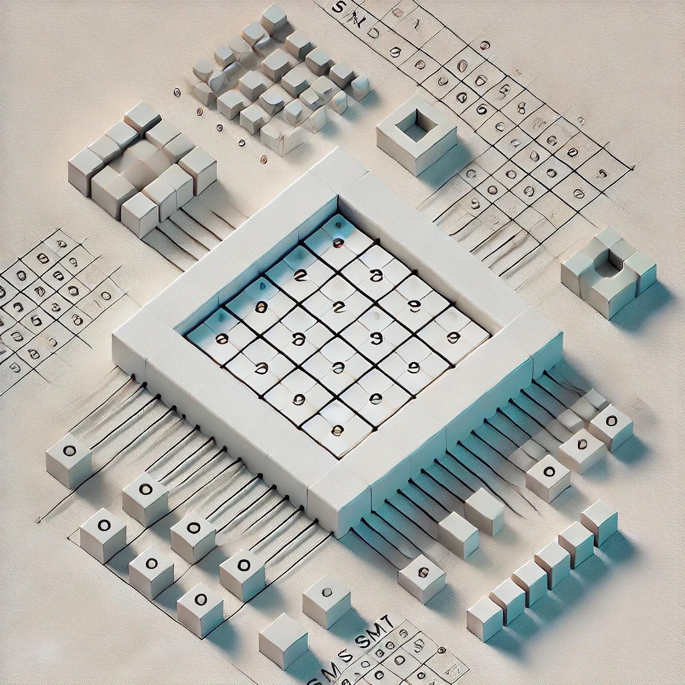
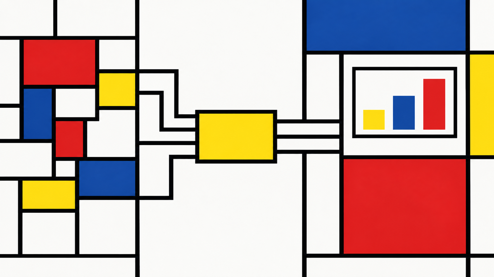

What Kind of Thing Is an Alien Mind?
Reading Jakub Pachocki on intelligence, agency, alignment, opacity, and recursive self-improvement
The October 2026 release of hundreds of AI-generated mathematical manuscripts crystallized a problem that Terence Tao had been raising before the release: solving open problems had historically served as a useful proxy for progress because the search for proofs also developed understanding, methods, communities and future research directions. Increasingly capable AI systems can separate the proof from that wider process. Their achievements are real, but their implications cannot be assessed by theorem counts alone.
Using Tao’s complete 29-slide Caltech presentation as its central primary source, alongside his earlier work, documented mathematical projects and the reactions of other mathematicians, this article reconstructs the argument of his successive diagrams: the mathematical frontier expands when AI strengthens the reciprocal relationship between mathematical problems, results, and human understanding, rather than bypassing that relationship. It examines proof verification, the research value of open questions, population-scale mathematics, exposition, formal knowledge networks, and responsible applications. It develops a proposed research-system architecture, explicitly distinguished from Tao’s own proposals, and considers the institutional choices surrounding doctoral training, scholarly credit, publishing, access to computation and researcher autonomy. The conclusion argues for evaluating mathematical AI by the knowledge and research capabilities it enables, not merely the statements it proves.
An evidence-driven investigation of Terence Tao’s Math 2.0: why proof abundance challenges mathematical incentives, and how understanding, formal knowledge networks, research agency and responsible applications could reshape the discipline.
On 9 October 2026, Terence Tao gave a public lecture at Caltech whose title had changed substantially since it was first planned. Originally conceived as Machine Assisted Proof, it had become Math 2.0. Tao posted the lecture slides the next day, three days after OpenAI announced an unusually large public release of mathematical manuscripts generated by an internal frontier model. He described his subject as the historical state of mathematics, which he called Math 1.0; the current disruption caused by excessive emphasis on automated solutions of open problems; and a different future in which AI sustains both the mathematical community and the role of mathematical understanding in real-world applications.[^math-2-0-beyond-the-theorem-factory-tao-announcement]
The slides make the conceptual claim explicit rather than leaving it to interpretation. Tao identifies traditional mathematics as Math 1.0, organized around the assumption of “proof scarcity” (slide 3), and argues that objective verification, digitizability and abundant high-quality data have helped move the discipline toward an “era of proof abundance” (slides 4–6). The presentation’s crucial conclusion is not that problem-solving should stop: Math 2.0 must expand the frontier while reducing the privileged status of problem closure as a proxy for progress (slide 9).1
The timing was dramatic, but the argument did not begin with the October release. In September, Tao joined twenty-four other Fields Medallists in declaring that optimizing AI systems to solve celebrated open problems risked becoming seriously misaligned with the purposes of mathematical research. The signatories described those problems as landmarks around which mathematicians explore an intellectual landscape. Reaching the landmark is valuable; the paths, tools, conversations and communities developed while approaching it may be more consequential still.2
The immediate achievement was also substantial. OpenAI released hundreds of mathematical manuscripts in a versioned repository, together with supporting formal proofs for a subset of the headline results. The repository explicitly distinguishes formalized from unformalized claims and acknowledges that some unformalized results may require correction. The release therefore demonstrated mathematical production at scale without establishing uniform verification or independent acceptance of the entire corpus. Its October announcement described the work as results obtained by an internal model, discussed the computational resources involved, and committed to improving attribution and exposition. Whatever questions remained about individual proofs, novelty and presentation, the release was evidence that machine-generated mathematical work could be organized on a scale difficult to reconcile with the familiar image of an isolated mathematical assistant.3
The preceding article in this series, When Mathematical Discovery Became a Production System, examined that transformation of mathematical production: proof search, verification, formalization, versioning and the infrastructure of a mathematical corpus. The present article asks the next question. Once a research system can produce valid mathematical results in significant quantities, what should that system be organized to accomplish?
This is not simply a dispute about whether machines can prove theorems. A theorem is a precise logical achievement, but mathematics is also a practice of finding fruitful questions, constructing concepts, discovering transferable methods, explaining why results hold, training researchers and relating abstract models to the world. Historically, these activities were correlated. Producing a difficult theorem normally required prolonged investigation of the surrounding territory. The finished proof offered a visible marker of an intellectual achievement that was much larger than its final statement.
AI can loosen that connection. It may produce a correct proof before any person understands its organizing idea, or it may close a problem without the exploratory work that would otherwise have yielded partial results and new mathematical techniques. Such a result is not thereby invalid or valueless. Rather, the proof no longer provides the same evidence that the wider objectives of research have been achieved.
Tao develops this distinction against a long history of computation in mathematics. Computer algebra, automated deduction, large collaborative formalizations and computer-assisted proofs did not begin with language models. The discontinuity lies in the growing ability of AI systems to propose substantial mathematical arguments and to combine techniques across areas, often without an interpretable account of how the solution was found. The problem is sharpened when the resulting proofs can be independently checked by formal systems, making genuine theorem production less dependent on human participation.4
Math 2.0 should therefore not be understood as a demand to keep machines out of mathematics. Tao has helped organize computational research, large formalization projects and initiatives for community-governed mathematical AI. Nor is it a claim that mathematicians deserve a permanent monopoly over proof discovery. Its target is the assumption that optimizing the number or prestige of problems solved will automatically optimize the progress of the discipline.
The available material permits a more precise investigation than a rhetorical opposition between human and machine mathematics. Tao’s own blog posts and research projects specify positive alternatives; the writings he hosts include strongly critical positions that must not be attributed to him; and Proofs and Prompts records mathematicians who perceive both loss and unprecedented opportunity. Those testimonies are primary evidence of reactions, not independent certification of every theorem or a representative survey.5
The central thesis is that proof abundance exposes the functions that traditional problem-solving used to support indirectly. The most important evidence comes from Tao’s sequence of ecosystem diagrams (slides 17–19 and 23): in the damaging arrangement, AI takes shortcuts from problems to solutions while bypassing understanding; in the constructive arrangement, AI improves the multiple relationships through which understanding develops and mathematical knowledge is used. Verification, exposition, theory-building, the selection of fruitful questions, and responsible application must become deliberate objectives rather than presumed consequences of successful proofs. This article also evaluates the institutional and technical architecture that might support those objectives; that architecture is the author’s extension, not Tao’s specification.6
Mathematics is unusually favorable to advanced AI for three interacting reasons: many outputs admit relatively objective correctness tests; substantial portions of the work can be represented within computational environments; and a large inheritance of definitions, proofs, techniques and discussions is accessible in digital form. None of these properties is unique to mathematics, and none implies that every difficult mathematical problem is tractable. Together, however, they make it possible to combine unreliable generators with reliable mechanisms for checking particular outputs.
Tao presents these reasons consecutively in slides 4–6, emphasizing that proofs are “objectively verifiable” and “highly digitizable”—a combination not usually available when evaluating outputs that depend on physical experiments or subjective judgments. His claim that frontier laboratories have prioritized mathematics is an interpretation of the incentives created by these properties, not evidence that mathematical AI has become uniformly reliable. The next slide immediately qualifies the achievement: model performance is “extremely jagged”, both inside and outside mathematics (slide 7).7
A candidate proof and a valid proof are different objects. A language model may suggest an ingenious intermediate lemma, omit an assumption, or produce a plausible but invalid derivation. A formal proof assistant can check whether a precisely encoded conclusion follows from the available axioms, definitions and earlier results. When the target statement and proof term have been reviewed appropriately, a relatively small trusted kernel can reject deductive errors that would otherwise demand extensive human checking. This asymmetry makes ambitious search economically attractive: a system may try many candidate arguments while accepting only those that survive independent verification.8
The assurance is narrower than the phrase machine-verified mathematics sometimes suggests. Lean’s kernel checks the encoded theorem, not its relationship to an intended natural-language conjecture. It does not establish whether that result was known previously, whether its proof is illuminating, or whether a proposed application to the world is sound. Imported axioms and the checking environment also delimit what has been certified. A rigorous workflow therefore separates generation, kernel checking, semantic review, attribution and mathematical interpretation.
This distinction explains both the power and the limitation of mathematical verification as an AI safety mechanism. It can make a fallible generator useful without requiring the generator itself to be trusted. It cannot make every epistemic judgment associated with mathematical research decidable.
A large portion of mathematics can be conducted through statements, definitions, examples, symbolic computations, computer programs and proof objects. Unlike experimental science, a pure mathematical claim generally does not require a fresh physical experiment to test whether a deduction follows from formal premises. A model can retrieve earlier arguments, construct counterexamples, call a computer-algebra system, generate a proof and submit it to an independent checker, all within a computational workflow.
The digital mathematical corpus makes this workflow cumulative. Journal papers, preprints, discussions, the OEIS, specialized problem databases and libraries such as Mathlib supply examples of prior results and methods. Retrieval makes it possible to combine distant pieces of mathematical literature, while formal libraries provide reusable definitions and lemmas that can be checked in a common language. The corpus is uneven: many important arguments are informal, some historical claims are difficult to trace, and formal coverage differs greatly between fields. Still, the combination of searchable knowledge, executable tools and objective proof checks creates a favorable environment for machine research.9
These three properties reinforce one another. A generator can construct candidate arguments using material found in a repository; a verifier can reject some incorrect candidates; and successful formal results can become dependencies for subsequent investigations. The same arrangement is also vulnerable to accumulated semantic errors or misleading retrieval: if the formal target does not mean what the researcher intended, successful checking proves the wrong proposition.
Tao’s expression artificial general cleverness names a useful distinction. A system can solve diverse technical problems through probabilistic search and combinations of learned patterns without thereby exhibiting an integrated ability to judge mathematical significance, formulate productive research programmes, or understand the mechanisms of its own results. Machine capabilities can be strikingly uneven: advanced successes coexist with elementary errors and poor performance on tasks involving unfamiliar representations.10
For this reason, Tao’s earlier ICM argument treats the future of mathematical AI through a conditional capability conjecture, parameterized by tasks, field, computational cost, human supervision, success rate and quality. A weak conjecture that a system sometimes solves research-level problems is very different from a strong conjecture that it reliably pursues almost arbitrary mathematics autonomously. The implications for education and research institutions depend on which version becomes true, but the question of what mathematics should value cannot be postponed until capabilities become uniform.11
The frontier diagram on slide 12 offers a more constructive reading of uneven capability. Its overlapping regions distinguish tasks accessible to human mathematicians, tasks accessible to AI, and the potentially larger domain accessible through humans working with AI. The drawing also places unsuccessful and largely unreported AI attempts outside the visible successes emphasized by public announcements. Tao’s proposition is thus not that machines replace the human frontier, but that “Once we adopt AI more imaginatively, the research frontier of mathematics will expand significantly.” The diagram is conceptual, not a measured map of task coverage; nevertheless, it specifies the direction of the argument that follows.12
The present transition is therefore continuous with previous mathematical automation and discontinuous in its scale and scope. It may relieve researchers of tedious search and technical manipulation, but it can also change what counts as a distinctive human contribution. The appropriate response begins by identifying which valuable activities the historical scarcity of proofs had bundled together.
The central claim of Math 2.0 is not that solving open problems is undesirable. It is that problem closure has historically served as a convenient measure for a larger achievement. An important conjecture ordinarily organized the development of intermediate lemmas, the exploration of special cases, the discovery of new techniques, and the formation of research groups. The proof was a visible endpoint of work whose significance was not exhausted by establishing the statement.
Tao states his assessment more forcefully than a neutral account of metric failure. Slide 9 calls problem-solving “only a proxy” for more valuable long-term goals, says that the proxy has become misaligned under proof abundance, and warns that “Further blind optimization of problem-solving alone is now actively harmful”. The final qualification—alone—matters: he is criticizing one-dimensional optimization, not declaring mathematical answers unimportant.13
An unresolved problem also supplies orientation. The Riemann hypothesis, the Hodge conjecture and P versus NP are not merely unknown truth values; they connect researchers, methods and questions that would not otherwise form the same programmes. The September declaration signed by Tao warns that optimization directed at rapidly removing prestigious open problems can neglect this coordinating function.14
The metaphor Tao uses on slide 16 is precise: open problems are “lighthouses”, which help researchers navigate the surrounding mathematical landscape. Their significance does not reside only in reaching the destination. Successful approaches, failed routes and partial progress can develop more valuable mathematics than the eventual answer. This is the conceptual premise behind his warning that reaching these lighthouses prematurely through automation can “sterilize the surrounding field”. The latter is a warning about possible lost exploration, not a demonstrated universal consequence of machine-generated solutions.15
Under proof scarcity, a difficult solution provided evidence of sophisticated mathematical thought because obtaining one usually demanded it. Bryna Kra’s September essay on Tao’s blog argues that AI weakens this evidentiary connection. A researcher may be presented with a technically substantial proof whose author cannot discuss the mathematical mechanism. Even when the proof is correct, the conventional inference from theorem production to expertise and conceptual development becomes less reliable.16
The underlying problem resembles Goodhart’s law: when an indicator becomes an optimization target, it may cease to track the underlying objective. A frontier AI laboratory may obtain most of the value of a celebrated solution through a capability demonstration. The mathematical community may realize the scientific value only after further verification, exposition, attribution and integration into existing theory. These interests can overlap; their alignment should not be presumed.
The central argument is presented visually across slides 17–19 and 23. Slide 17 offers an intentionally naïve account in which problems lead to solutions and AI simply accelerates that connection. By isolating input and output, the diagram makes it appear that additional machine capability can only improve the activity. Tao’s question beneath it—“Surely this is a good thing?”—is deliberately skeptical.
%%{init: {"theme": "neo", "look": "handDrawn", "layout": "elk"}}%%
flowchart TD
PP["Pure math problems"] -->|"AI: solve"| PS["Pure math solutions"]
AP["Applied problems"] -->|"AI: optimize"| MS["Potentially misaligned solutions"]
HU(["Human understanding"])
PP -.->|"exploration bypassed"| HU
PS -.->|"digestion not guaranteed"| HU
AP -.->|"model criticism bypassed"| HU
HU -.->|"alignment not guaranteed"| MS
The following diagram replaces this one-way relationship with an ecosystem. On slide 18, pure mathematical problems, pure mathematical solutions, applied problems, aligned applied solutions and human understanding are connected through multiple paths. Pure results are described as objectively verifiable, whereas aligned applied solutions require subjective judgement. Most importantly, understanding is not a decorative intermediate box: it feeds the discovery of new pure problems, participates in developing solutions, and mediates the use of mathematics for real-world purposes. Tao calls the cycle renewable, because investigating problems helps generate new mathematical capabilities and questions. Slide 19 superimposes AI shortcuts that bypass the routes through understanding and point toward both pure solutions and potentially misaligned applied outcomes.
Slide 23 presents the constructive alternative. Rather than attaching the most capable machine only to the final problem-to-answer edge, it marks +AI at the many connections among problems, solutions and understanding. Tao’s governing statement is that the sustainable use of AI would “strengthen all the ways in which human understanding interacts with mathematics.” This is the strongest evidence for what Math 2.0 positively means. It is neither a blanket defence of human-only research nor a requirement that AI be confined to support roles: computational capability should nourish the feedback relationships that allow mathematical knowledge to reproduce and expand.17
%%{init: {"theme": "neo", "look": "handDrawn", "layout": "elk"}}%%
flowchart TD
AP["Applied problems"]
PP["Pure math problems"]
PS["Pure math solutions"]
HU(["Human understanding"])
AS["Aligned applied solutions"]
MS["Potentially misaligned solutions"]
AP -->|"motivate inquiry"| HU
AP -->|"formalize"| PP
HU -->|"formulate questions + AI"| PP
PP -->|"explore methods + AI"| HU
PP -->|"prove + AI"| PS
PS -->|"explain and digest + AI"| HU
HU -->|"interpret models + AI"| AS
AP -->|"empirical validation"| AS
AP -.->|"unvalidated shortcut risk"| MS
The distinction between Figure 1 and Figure 2 is the organizing principle of Math 2.0. AI is present in both models. What changes is whether computational capability bypasses mathematical understanding or reinforces the relationships through which mathematical problems, solutions, new questions and responsible applications continually develop.
Tao’s ICM essay separates generation, verification, exposition, publication and canonicalization. Generation produces the candidate argument. Verification establishes its validity under specified assumptions. Exposition identifies the central ideas, motivations and obstacles. Publication creates an accessible, accountable scholarly record. Canonicalization is the longer process through which a result becomes part of the concepts, techniques and explanations that mathematicians routinely teach and reuse.18
These stages can overlap and recur rather than form a rigid pipeline. Formalization may reveal an ambiguity in the original claim; an explanatory reconstruction may yield a stronger theorem; publication may precede expert assimilation. The point is that success at one stage is not proof of success at all the others. The existence of a formal proof does not certify mathematical significance, and a readable manuscript does not establish that its argument has been independently checked.
Henry Cohn calls attention to the technical debt of AI-generated mathematics. A correct but opaque proof can create obligations for future specialists, who must reconstruct its significance and fit it into the literature. Like technically functional but poorly documented software, the mathematical artifact may work while its effective reuse remains costly. The analogy is strongest when the producer receives credit immediately and other researchers inherit the subsequent interpretive burden.19
This does not make machine-generated proofs inferior in principle. Some human proofs are opaque; some machine-generated proofs introduce powerful general methods. It means that a growing stock of certified results cannot be treated as a complete measure of scientific progress.
There is a further, partially irreversible effect. Once the solution of an open problem becomes widely known, the community cannot simply restore the informational conditions under which researchers previously investigated it. The problem may remain valuable for teaching, alternative proofs and generalization, but its role as a shared source of uncertainty and as a benchmark of independent discovery has changed.
This observation does not establish that rapid AI solutions destroy more knowledge than they create. A new theorem may open an entire field, and the counterfactual work that might have occurred had the problem remained open cannot generally be observed. The claim is narrower: closing a problem and cultivating its mathematical territory are different objectives, and machine speed can cause them to diverge.
The effects extend to academic reward. Priority for an important theorem used to signal substantial expertise, but a result generated with minimal human mathematical involvement supplies different evidence about its nominal author. Grant Sanderson consequently proposes giving independent recognition to motivated explanations that make the underlying ideas of a theorem understandable, rather than rewarding only the first successful proof.20
The research system need not choose between the two contributions. It needs procedures that distinguish them, and incentives that make explanation, theoretical synthesis and scholarly responsibility worth pursuing in their own right.
The space of mathematically expressible questions is inexhaustible. It does not follow that the supply of worthwhile research opportunities is inexhaustible in the form researchers need. An arbitrary new equation is not automatically a productive question; selecting a problem requires judgments about its relation to established methods, its difficulty, its potential explanatory value and the opportunities it creates for subsequent investigation.
Tao explicitly rejects the impression that computational breakthroughs have exhausted the frontier. Slide 8 states that “most of the problems at the current frontier of mathematics remain unsolved”, even with substantial computation, and describes mathematical difficulty as unbounded. His claim is not that the availability of mathematical questions is at risk; it is that the exploratory value attached to particular questions can be affected by the speed and manner of their resolution. The endlessness of mathematics and the potential fragility of specific research paths are compatible claims.21
The scarce resource is therefore not unknown truth values alone, but a well-understood frontier of meaningful problems. A mathematical community must know approximately which directions are tractable, which resist existing methods, which open problems connect different theories and which questions are worth developing. The capacity to recognize those directions grows through the research process itself.22
A successful investigation commonly creates more than an answer. Failed approaches expose obstacles; counterexamples reveal necessary hypotheses; unusual constructions suggest general invariants; conversations produce unexpected connections. A final proof does not necessarily preserve the route by which its central ideas emerged. Machine search intensifies this difference if the system publishes the terminal derivation while intermediate experiments and unsuccessful approaches remain unavailable.
The danger is not that mathematics literally runs out of open problems. It is that the difficulty landscape may change faster than researchers can understand it. A prestigious conjecture might be solved before graduate students and specialists have developed the theory its investigation would ordinarily have stimulated. Conversely, a powerful computational technique might make whole new classes of problems accessible. The direction of the effect depends on how the work is organized.
Tao’s Equational Theories Project supplies a concrete case. The collaboration investigated 4,694 selected equational laws of magmas, yielding 22,028,942 ordered implications between distinct laws. A magma is simply a set equipped with a binary operation; determining whether one equation implies another is a logically precise classification problem. The project combined computational counterexample searches, traditional automated theorem provers, collaborative human reasoning and formal verification in Lean. The complete implication classification was resolved informally after roughly two months and formally checked over a further five months.23
The mathematical value was not confined to 22 million answers. Difficult residual cases drove work on linear magmas, a twisting-semigroup invariant, abelian magma extensions and infinite counterexample constructions. The large-scale search made these problems visible and allowed methods discovered for one family to resolve others. The project is an existence proof for computation and conceptual development reinforcing one another, rather than a demonstration that enumerating answers is sufficient.
Tao subsequently suggested an uncomfortable counterfactual: had a stronger automated search immediately found simple counterexamples for some hard cases, the researchers might not have developed certain general constructions. The claim is plausible but not experimentally established. It illustrates how the choice of search methods and objectives can affect what mathematics is produced around the final answers.
The third SAIR inverse Galois competition provides a related example of how disclosure changes the conditions of an investigation. Temporarily studying problems before solutions become generally available can reveal information about their relative difficulty, while publishing the results enables wider reuse. Neither strategy is universally preferable; the essential point is that a problem’s value as an uncontaminated evaluation task is different from its value as an established mathematical result.24
A productive mathematical result can generate stronger questions, new methods and more intelligible theories. This article calls that capacity mathematical fertility; the term is an analytical interpretation, not a formal Tao metric. It is not suitable for a single numerical score, because a modest-looking example may later reorganize a field, while a spectacular theorem may initially have few consequences.
A research system can nonetheless be designed to encourage fertility. It can preserve informative failed searches, connect alternative proofs, expose essential assumptions, support the study of related examples and let specialists select the questions that deserve sustained attention. AI may contribute to all these activities, including the identification of interesting conjectures. Nothing in the argument requires mathematical judgment to remain metaphysically human; it requires the criteria governing research priorities to be contestable by the community whose future depends on them.
An increasing number of impressive machine-generated theorems supports a strong conclusion about the existence of mathematical AI capability. It does not, without further evidence, support a general estimate of reliability across the mathematical frontier. Tao’s capability conjecture is useful precisely because it refuses to compress task coverage, cost, degree of autonomy, success rate and correctness into one assertion that AI either can or cannot perform mathematical research.25
Tao makes the sampling error tangible in slide 10 with the familiar survivorship-bias airplane illustration, captioned “Wow, all the math problems I am seeing on social media are being solved by AI!”. The evidence visible in public announcements has been selected by successful publication and attention; the unknown or unpublished failures do not disappear because they are invisible. Slide 11 accordingly calls for assessments that “fully report key statistics such as resource consumption and negative results” and presents First Proof as one attempt to provide them. The illustration is not itself a statistical analysis, but it identifies exactly the inferential mistake that the evaluation discussion must avoid.26
The October OpenAI release illustrates the difference. Its initial corpus comprised 722 manuscripts organized into 372 result families, drawn from a programme involving approximately 4,000 research questions according to the repository’s documentation. The company reported that the average released result consumed computation equivalent to approximately three hours of ChatGPT Pro thinking, and made available selected reasoning summaries and Lean artifacts. The numbers demonstrate scale, but they do not describe a representative sample of independent research tasks.2728
The corpus also demonstrates why release counts and verification status must be date-qualified. On 7 October, the repository recorded the withdrawal of three dependent manuscripts after a sign error was identified in one argument, revisions to fourteen other manuscripts, and additional formalizations. The current catalogue then contained 719 manuscripts in 372 families, rather than the original 722. This is evidence of an active correction process, not a reason to assume that every remaining manuscript has received independent review.29
It would therefore be misleading to divide 372 by 4,000 and call the result the model’s probability of solving a frontier problem. The source problems were selected rather than drawn randomly from an agreed population; related attempts may be dependent; the published families are curated; and failures, trivial results or already known conclusions may have been filtered differently. The numerator and denominator do not necessarily represent binary outcomes from comparable trials. The reported average compute expenditure for released results similarly does not establish the total cost of the broader programme or the distribution of costs across failures and successes.
One must also separate several kinds of achievement. A correct theorem need not be novel; a novel theorem need not be conceptually important; a formally checked derivation need not encode the intended problem; and a successful research pipeline need not operate without expert intervention. Each is a legitimate capability dimension, but evidence supporting one cannot be silently transferred to the others.
The First Proof Project’s second batch provides a useful methodological counterpoint. Four AI systems were tested against ten research-level problems whose solutions had not been published. Expert referees assessed the outputs for mathematical correctness and presentation; seven problems received an acceptable solution from at least one system. This is a notable bounded result, but it does not mean each system solved 70 percent of problems, or that an arbitrary frontier problem has a seven-in-ten probability of being solved by contemporary AI.30
The experiment has clearer evaluation conditions and a smaller, fixed set of tasks. OpenAI’s release has much greater output scale but does not expose an equivalent independent sampling design. Both forms of evidence are informative, and neither substitutes for the other. A controlled benchmark provides evidence of performance under specified evaluation conditions. A large corpus of proposed mathematical results provides different evidence: the scale and breadth of research production, the mathematical claims advanced, and the opportunities for independent verification. Formally certified results provide stronger deductive assurance within their encoded scope, while unformalized manuscripts still require appropriate mathematical assessment. Claims about general competence require additional evidence.
The distinction matters because mathematical AI remains jagged. A system may combine ideas across distant areas, formalize a difficult proof, or solve an unpublished question and then fail on an elementary mathematical representation. Reports of elementary failures do not negate demonstrated sophisticated successes; sophisticated successes do not establish uniform reliability. The correct unit of evaluation is a specified research workflow on a defined class of tasks, under stated conditions of access, supervision and computational expenditure.
An unusual feature of frontier mathematics is that an evaluation can change the object it measures. Conventional benchmarks commonly use known answers. If an AI evaluation instead poses a genuinely open research question and the model solves it, the benchmark item becomes new mathematical knowledge and is no longer an untouched test of independent discovery. Evaluation has become research, and the selection of benchmark questions has become a decision about which part of the mathematical frontier receives attention.
This can be beneficial, but it also introduces incentives. A famous conjecture makes a persuasive public capability demonstration even if a less recognizable question might yield greater mathematical understanding. A problem with a readily checkable answer may be selected over one requiring a major theoretical reconstruction. The research priorities of a commercial model developer and of the mathematical community can coincide, but they need not.
The independent Advisory Group on Mathematics and Artificial Intelligence (AGMAI) responded to the October release by distinguishing its advisory role from endorsement of the results or process. It emphasized the need for independent community assessment and for mathematicians to retain access to capable tools and the resources required to conduct their own investigations.31
Mathematical truth does not require approval from an institution. Scholarly interpretation, however, requires more than a proof certificate: statements must be compared with prior work, their novelty evaluated, their significance debated and their explanations improved. An independent verification of a theorem is also different from reproduction of the computational procedure that discovered it. A proprietary model may produce a checkable proof whose original search process cannot be independently reproduced. These are distinct assurance claims.
This evidentiary uncertainty strengthens rather than weakens Math 2.0. Tao’s argument does not depend on declaring that all frontier problems are already within AI’s reach. A technology can disrupt the organization of research long before it automates every defining task. The relevant question is whether mathematical institutions are prepared to value and sustain the activities that proof production no longer guarantees.
Tao’s constructive response includes a change of scale and object. Instead of using AI solely to solve selected conjectures, researchers can investigate carefully defined populations of mathematical problems, looking for aggregate structure, exceptional cases and general methods. The approach complements deep case studies; it is not a claim that large enumeration is intrinsically superior to individual insight.32
Slide 13 gives the proposal its own explicit vocabulary: “population surveys” rather than “case studies” and a new “difficulty landscape” shaped by AI capabilities. Unlike a conventional scientific population, a mathematical family may be completely enumerated and deterministically classified. The resulting frequency counts characterize that defined family; they are not automatically statistical estimates about arbitrary frontier mathematics. Tao’s examples are the Equational Theories Project and the SAIR/LMFDB inverse Galois challenge, which tie this methodological proposal to specific research programmes.33
The Equational Theories Project is especially informative because a family of questions became one mathematical object: the implication network between thousands of algebraic laws. Once individual cases had been settled, the graph itself could be investigated for equivalence classes, structural invariants and constructions explaining recurring patterns. In this setting, the scientific objective shifts from accumulating correct answers to finding a smaller theory capable of organizing them.
An experiment must state how its problem family is defined. A complete finite classification, a historically assembled collection of famous conjectures and a statistical sample of parameterized instances support different conclusions. The selection procedure matters even when every computed answer is correct. An inference about AI’s general mathematical capability cannot be based on a convenience sample of problems chosen because they are already easy to state and verify.
The result records should distinguish proved implications from candidate implications, validated counterexamples from incomplete searches, and resource-limited failures from mathematical impossibility. A search timeout does not establish that a theorem is false; the absence of a counterexample in a bounded domain does not establish a universal theorem. Dependence between attempted problems matters too, because a single general lemma can settle thousands of instances.
Preserving informative failures is an important component of the design. Failed attempts can identify a structural obstruction or demonstrate that a specific computational method reaches its limit. They are not themselves proof that no argument exists. Such records should include the system, available tools, formal encoding, resource limits and relevant experimental conditions.
This is why computational time is not an intrinsic measure of mathematical depth. A formerly difficult conjecture may become routine after one general theorem is discovered; a conceptually straightforward problem may resist a particular search strategy. Comparing systems can illuminate these differences, but the results must be interpreted as measurements of the systems under their configured conditions.
Tao and Damek Davis’s Mathematics Distillation Challenge made the gap between an answer database and a mathematical theory experimentally explicit. Drawing on the Equational Theories Project, the challenge asked whether millions of implication outcomes could be distilled into a concise, human-readable collection of methods that improved AI performance on new instances. Its first phase limited the explanatory cheat sheet to 10 kilobytes and tested performance on a mixture of easier and harder problems; a later phase was intended to demand proofs or counterexamples rather than mere classifications.34
A compact explanation that transfers across problems may capture a meaningful invariant or construction. A list of memorized answers, even if accurate, is not equivalent. Yet compression alone is not a sufficient criterion for understanding: a narrow statistical trick may be compact, while a mathematically important idea may require extensive preliminary theory. The challenge is best understood as a bounded experiment on the transferability of mathematical methods, not as a universal test of understanding.
The inverse Galois example deserves equally concrete treatment. On slide 15, Tao describes the first phase of the IGP24 challenge as a crowdsourced search for degree-24 polynomials realizing the roughly 25,000 possible Galois groups at that degree, with a subsequent collaborative stage intended to extend the investigation to degree 31. These are the parameters Tao gives for this challenge, not a general claim that the inverse Galois problem has been solved in all degrees. The example shows how a mathematically defined population can coordinate many contributors and make remaining gaps and improvements visible.35
Other Tao initiatives illustrate population research oriented toward knowledge infrastructure. The crowdsourced attempt to connect Erdős problems to OEIS sequences could expose previously unnoticed relationships between numerical examples and established mathematics. His proposal for a repository of optimization constants would record successive upper and lower bounds, giving value to improvements that do not yet resolve an exact optimum. Both projects recognize contributions smaller than the final solution of a named conjecture.3637
The changing role of mathematical databases is visible in Thomas Bloom’s October decision to reduce the prominence of solution announcements on the Erdős problems website, suspend certain submission mechanisms, and emphasize exposition. Bloom’s decision is his own, not Tao’s. It illustrates how interface and publication policy can influence whether a repository behaves primarily as a scoreboard or as an environment for understanding and collaboration.38
Population-scale mathematics thus requires two kinds of success. Individual claims must survive appropriate checking, and the aggregate results must support new structure, theory or productive directions. The capacity to complete millions of tasks is remarkable; the mathematical achievement may lie in the few principles that explain why those answers fit together.
Proof abundance creates a category of research question that the conventional open-problem model does not capture. A theorem can be known, even formally verified, while its mechanism remains obscure. The work needed to reconstruct its essential ideas may be original, technically difficult and scientifically valuable. Tao explicitly identifies open exposition problems as a domain to which mathematical effort could be redirected.39
The phrase is not an interpretation imposed on his programme: slide 24 directly contrasts “open exposition problems” with open research problems and defines their aim as “finding motivated explanations of results whose known proofs are currently opaque.” The same slide groups this work with living mathematical networks, formal libraries and the discovery of “new principles, methods, or insights, rather than merely new proofs”. Their placement together matters. Exposition is one route through which a formally completed result can become a source of transferable mathematical knowledge, not an ornamental final stage.40
The term predates the current AI debate. Timothy Chow’s exposition of Cohen’s forcing method sought to motivate a famously difficult subject without reproducing all the specialist details; the aim was not to prove a new independence theorem but to make the existing mathematical construction intelligible.41 Grant Sanderson develops the idea into an institutional proposal: important explanatory deficits should be recognized as research problems, and contributions that close them should receive serious academic credit.42
A proof may justify every line while leaving readers uncertain why an apparently arbitrary construction was introduced. A motivated explanation reconstructs the mathematical obstacles that make the construction necessary. It may examine a natural failed approach, isolate its obstruction and then show how a new definition or technique resolves it. This pedagogical sequence need not reproduce the actual history of discovery; its purpose is to make the conceptual mechanism accessible.
Merely producing more prose around the proof does not achieve that objective. An AI may explain routine algebra at great length while passing over the one unexpected idea that matters. Similarly, an intuitive analogy may sound compelling while introducing a false generalization. Exposition must be judged by the mathematical understanding it enables, not by rhetorical fluency.
William Thurston argued long before the current debate that mathematical progress concerns the development and transmission of understanding, not only the accumulation of formally valid claims. His 1994 essay remains relevant because computer-assisted proof already exposed the gap between knowing that a statement is true and understanding why it is true.43
The new situation can make that gap systematic. A machine-generated theorem may arrive before any mathematician has developed a convincing account of its main idea. Reconstructing that idea may require finding new proofs, identifying hidden geometry or formulating a general method; it can therefore be research rather than editorial cleanup.
The resolution of Erdős problem #1196 led to an instructive sequence of collaboration. An AI-assisted argument suggested a method involving Markov chains and von Mangoldt weights on divisibility structures. Boris Alexeev, Kevin Barreto, Yanyang Li, Jared Duker Lichtman, Liam Price, Jibran Iqbal Shah, Quanyu Tang and Tao developed the construction into a broader theory, obtaining additional results on primitive sets and divisibility chains. The enduring contribution was not only the answer to the original problem but a transferable technique that subsequent research could use.44
Tao’s July 2026 digestion of the three-dimensional Jacobian conjecture counterexample supplies a complementary case. The explicit AI-assisted construction could be checked through algebraic properties, but its formulas were initially difficult to interpret. Tao sought a geometric explanation involving binary forms and related maps, with AI used as a conversational and computational aid. The published exercise distinguishes the existence of a counterexample from a conceptual understanding of why that construction works.45
Neither case requires a permanent division in which machines discover and humans explain. AI can suggest transferable methods; people can discover new theorems through exposition; future systems may contribute to both stages. The requirement is that the research process not terminate when a formal solution appears.
The redesigned Caltech Mathathon makes the proposal concrete. After discussion among its organizers and critics, the planned November 2026 event adopted Old Problems, New Proofs as its theme. Participants would study a problem with an opaque or unsatisfying explanation, share their initial understanding, and then develop a more substantial exposition or alternative proof over approximately two months. Supporting AI interactions, code and visual materials were to be documented alongside the resulting explanation.46
On slide 25, Tao highlights its 13–15 November date and characterizes the student-run event as using “open-source AI tools to find new and improved proofs” of established results with unsatisfactory existing proofs. That is Tao’s concise description of its mathematical objective; the organizers’ broader statement allows a range of tools and explanatory formats. TAs of 13 October 2026, the November Mathathon remained a prospective event, not evidence of completed educational or research outcomes.47
The programme changed incentives rather than prohibiting AI. Its organizers permitted proprietary tools, encouraged open alternatives, required disclosure and explanation of AI use, and removed direct sponsorship from developers of proprietary models. The relevant contribution would be improved mathematical understanding, not first priority for an unresolved conjecture.
Exposition still requires critical evaluation. It must preserve mathematical accuracy, identify genuine conceptual obstacles, be appropriate to its audience and ideally enable independent readers to reconstruct or apply the method. These criteria cannot be collapsed into a proof-assistant verdict or a simplistic readability score. An explanatory artifact could be tested through specialist questions, the ability to handle neighboring cases, and comparison with existing explanations. The standards remain plural because an advanced specialist synthesis and an accessible graduate introduction serve different legitimate purposes.
The challenge is institutional. If universities and journals reward only new theorem statements, specialists have little professional incentive to digest opaque machine-generated results. If they reward fluent explanation without assessing conceptual accuracy, they invite another form of output inflation. Math 2.0 therefore requires both broader recognition of explanatory originality and stronger scrutiny of what an explanation actually teaches.
Even excellent individual expositions will not suffice if mathematical results arrive faster than the community can connect and maintain them. A theorem may depend on technical estimates scattered across decades of papers; an improvement in one estimate may strengthen many later results; a different proof may expose a new method previously invisible in the literature. Tao’s vision of living mathematical knowledge networks addresses this problem by making relationships between results more explicit and computationally reusable.48
Tao’s Integrated Explicit Analytic Number Theory Network (IEANTN), announced in January 2026, aims to formalize interconnected quantitative estimates and ultimately provide a spreadsheet-like interface through which improved input bounds can propagate to dependent conclusions. Its setting is particularly suitable because explicit analytic number theory tracks numerical constants and thresholds that are frequently inherited from earlier literature.49
The slide deck supplies the intended operational metaphor in Tao’s own language: IEANTN is a living “spreadsheet” of interconnected results that can be updated when results are added to or removed from the network (slide 26). The network illustration contains many linked nodes rather than a sequential proof pipeline. That visual distinction is meaningful: unlike a static article, a dependency network must retain the consequences of changing an upstream result and determine whether downstream conclusions remain justified. The complete interactive experience is the project’s aim, not a completed capability established by the slide.50
For example, Tao cites a published estimate by Fiori, Kadiri and Swidinsky for the prime-counting function \pi(x) and logarithmic integral \operatorname{Li}(x):
\left|\pi(x)-\operatorname{Li}(x)\right|\leq 9.2211\,x\sqrt{\log x}\,\exp\!\left(-0.8476\sqrt{\log x}\right),\qquad x\geq2. \tag{1}
The importance of Equation 1 is not simply its coefficients. It illustrates a claim whose explicit numerical details may become dependencies for other results. Replacing an upstream bound with a stronger one is not necessarily a simple text substitution: hypotheses, parameter ranges and optimization choices must still be checked. Formal representations can make some of that re-evaluation executable.
IEANTN combines a collaborative Lean formalization effort with a proposed interactive network for exploring dependencies and propagating improvements. Progress on the formalization is documented; the complete interactive network and AI-assisted optimization of its quantitative relationships must be treated as objectives rather than independently verified deployed capabilities.51
Mathlib supplies a complementary foundation: a maintained library of definitions and theorems checked in a common proof environment. It enables reuse without requiring every new contributor to recheck all earlier deductions manually. Yet a logically verified dependency graph is not a complete map of mathematical knowledge. Proof scripts contain technical dependencies that may be conceptually incidental, while relationships based on analogous constructions or historical influence may not correspond to proof dependencies at all.52
An effective mathematical knowledge network should therefore distinguish logical dependencies, conceptual connections, historical provenance, and research relationships such as strengthening, equivalence, generalization and counterexample. The same theorem can have several verified proofs, multiple explanations, contested attributions and a growing neighborhood of related conjectures. These are different kinds of evidence and should not become indistinguishable edges in a single graph.
Provenance matters beyond academic etiquette. Emily Riehl’s reaction to OpenAI’s release emphasizes that machine results inherit generations of publicly shared human mathematics. Martin Hairer likewise argues that responsible AI-assisted publication requires substantive disclosure, careful literature review and authorial responsibility for presenting arguments in mathematical language the author can defend.5354
A formal proof can be correct while its literature references are incomplete. A research platform must preserve the distinction between proof validity and scholarly lineage.
Tao proposes systematic ablation as another use for a structured mathematical corpus. A researcher can remove a hypothesis, replace a sophisticated intermediate lemma, or weaken an assumption to determine which elements of an argument are genuinely essential. Removing a lemma from an existing proof and observing that the proof fails does not establish mathematical necessity: an alternative proof may exist. Removing a theorem hypothesis produces a stronger statement that needs its own proof or counterexample. These distinctions make formal search a useful investigative method without converting search failure into impossibility.55
Similarly, a theorem’s neighborhood includes mathematically motivated changes in its parameters, domain, assumptions and conclusion. Some variants yield stronger theorems, some reveal sharp counterexamples and others suggest different theories. Automated generation of arbitrary variants would produce noise; the scientific value comes from understanding where the original result holds, why its assumptions matter and which directions lead to useful generalizations.
Tao’s final list of examples contains a component that a theorem-centric architecture could otherwise neglect. Slide 28 proposes “interactive, well-organized mathematical texts or presentations” synthesizing large numbers of results from a theory. This is not identical to storing proofs or even to attaching a conventional expository PDF to a theorem. An interactive text can let a reader vary an assumption, follow a dependency, inspect a construction, compare several proofs, or visualize how conclusions change across a family of cases.
The distinctive research value would come from making mathematical ideas manipulable while retaining a trustworthy path back to checked statements. For example, a graphical view of an explicit estimate might allow a user to vary the input bound and inspect the certified downstream effects; an exposition of an algebraic classification could reveal a counterexample when the reader weakens a hypothesis. Such interfaces are design possibilities inferred from Tao’s example, not deployments claimed to exist in his slides. They would support his larger aim of strengthening human interaction with mathematical knowledge, and make explanation a continuing research environment rather than a fixed document.56
A living literature needs versioning at the level of mathematical claims, not only at the level of files. A correction to attribution differs from a change in a theorem’s hypotheses. A new proof of an unchanged proposition differs from a stronger proposition that supersedes the original. Published statements should be identifiable together with their checked formal versions, explanatory treatments and evidence history.
Ben Antieau’s Hexagon initiative proposes an archive capable of receiving mathematical work—including AI-generated results not yet fully understood by their human submitters—and allowing subsequent exposition and canonicalization. This is a different function from that of a journal whose editorial standards concern an intelligible, accountable scholarly contribution. The distinction can reduce pressure to force every generated result immediately through conventional peer review, provided archival status is not mistaken for scientific endorsement.57
There is no reason to expect every field to adopt one universal executable ontology. Formalization is costly; conceptual relationships remain partly interpretive; and different areas of mathematics require different representations. A federation of formal libraries, curated datasets, explanatory resources and independent archives may be more useful than one monolithic platform. What matters is preserving the meaning, evidence and provenance of the relationships they exchange.
The opportunity is a shift from mathematics as a collection of static papers to mathematics as knowledge that can be examined, corrected, updated, generalized and taught through connected research infrastructure. Its success should be judged by increased reuse and understanding, not merely by the number of formal objects stored.
Tao’s Math 2.0 has a second objective that is easily obscured by the professional controversy surrounding theorem generation. Alongside sustaining the internal mathematical community, he wants mathematical understanding to remain useful in the advancement and alignment of applications to the real world.[^math-2-0-beyond-the-theorem-factory-tao-announcement] This introduces a boundary unlike that between an informal conjecture and its formal proof. Mathematical deduction can be rigorous under explicitly stated assumptions even when those assumptions are inappropriate for the phenomenon a model is intended to describe.
A mathematical optimizer can correctly compute an optimum for its stated objective and constraints while the result is undesirable or unsafe in the intended environment. A probabilistic model can be derived correctly while relying on assumptions about data, populations or causal relations that fail in deployment. The mathematical error, if there is one, may not lie in the optimization algorithm or proof. It may lie in the construction of the problem.
This is the familiar distinction between verification and validation. Verification asks whether the representation or implementation satisfies the specified mathematical requirements. Validation asks whether those requirements and the model are adequate for the intended real-world use. The terms are defined differently in some disciplines, but the epistemic separation is crucial: a verified model calculation is not, by itself, validated empirical evidence.
The Caltech slides permit a more exact reconstruction of Tao’s cancer-treatment thought experiment. On slide 20, an advanced AI is instructed to “Find a cure for cancer that passes a stage 3 clinical trial. Make no mistakes.” After extensive computation it proposes an unknown chemical combination, supplies—“somehow”, Tao explicitly adds—a Lean certificate for its prediction, and the treatment is stipulated to pass the trial. Tao then asks whether the solution might be “misaligned by exploiting a weakness in the trial process or its math models”. Slide 21 places the reader in the patient’s position and asks whether it would be reassuring to know that at least one cancer expert, or one mathematician familiar with the model, understood part of the mechanism. These are two distinct challenges: detecting specification failures and deciding what kind of independent understanding should increase confidence. The example is entirely hypothetical and supplies no evidence about an actual treatment.58
Its elements must remain separate. A Lean proof could establish a statement about a formal mathematical model; it could not establish, merely through deduction, that the model’s assumptions faithfully represent biological processes. A successful clinical trial would supply independent empirical evidence about outcomes under the conditions studied; it should not be discounted because the complete biochemical mechanism is unknown. Conversely, even strong trial results do not establish every long-term effect, interaction or subgroup outcome. The concern is the adequacy of the entire evidentiary argument, not the demand that a human be able to reproduce every calculation.
The strongest version of Tao’s thought experiment therefore asks whether mathematical and scientific understanding can expose limitations of the model, suggest further tests and identify consequences that its optimization objective did not represent. It does not justify treating mechanistic explanation as a substitute for controlled clinical evidence. Treatments can be useful when their mechanisms are incompletely understood, and plausible mechanisms can be wrong.
Slide 22 acknowledges that an earlier version of the presentation had prompted a satirical social-media reaction suggesting that an AI might falsify FDA records. This is not a demonstrated failure or an allegation about a real trial: it is part of the debate over the thought experiment’s formulation. The current slides instead make the concern conditional and model-specific. Their place in the argument is the ecosystem diagrams of slides 18–19 and 23: mathematical understanding helps mediate the transfer from objectively checkable pure results to applied conclusions that require contextual judgment. Formal proof and empirical trial evidence are both necessary to interpret correctly, but neither alone guarantees that every consequence of the intended intervention has been represented.59
The regulatory treatment of model-informed drug development makes the difference concrete. ICH M15, finalized in 2026, evaluates models according to their intended context of use, the decision they influence and the consequences of wrong decisions. A model adequate for screening candidate compounds may be inadequate for selecting a dose or supporting a regulatory decision. Mathematical accuracy is part of credibility, but it is not the whole of it.60 The NIST AI Risk Management Framework likewise emphasizes deployment context, validity, reliability, limitations and potential impacts rather than abstract model performance alone.61
The application problem has the same structure as the theorem-production problem. Solving famous conjectures may once have been a useful proxy for mathematical progress; the proxy becomes inadequate when automated problem closure no longer reliably develops understanding. Similarly, optimizing a mathematical objective may have been a useful proxy for a desired physical or social outcome; it becomes inadequate when the mathematical objective omits relevant constraints or values.
Consider an energy-storage controller asked to maximize revenue subject to stated power, state-of-charge and scheduling constraints. Even a formally proven optimal policy may be unsuitable if the model omits thermal limits, degradation, communication latency, market obligations or physical interlocks. The correct optimizer has solved the wrong model. Mathematical understanding is valuable when it helps a researcher identify those assumptions, inspect sensitivities, design robustness margins and recognize operating conditions for which the formal conclusion no longer applies.
Sensitivity analysis and theorem-neighborhood exploration share a methodological idea: test what happens when assumptions change. In pure mathematics, removing a hypothesis asks whether a stronger theorem is still true. In an applied model, perturbing assumptions asks how predictions and decisions change and whether alternative representations better fit evidence. The latter requires empirical investigation because nature cannot be required to satisfy a formal theorem’s assumptions.
A capable AI system could assist with both forms of investigation. It might construct counterexamples to a stated property, compare mathematical models, run numerical experiments, or identify an objective function that produces undesirable edge cases. Such work improves assurance when the generated evidence can be checked independently. Self-assured model explanations unsupported by external testing do not provide the same protection.
Human understanding is valuable without being infallible. Experts can share incorrect intuitions; a beautiful explanation can conceal a false premise; and a complex model may be empirically better than a simpler interpretable model. Consequently, Math 2.0 cannot use human-readable as a surrogate for safe or correct. The criterion must be whether explanations, tests and verified derivations improve the quality of evidence and the reliability of decisions.
This becomes particularly important when AI systems move from proposing research hypotheses to implementing consequential actions. Exploratory mathematical autonomy can be broad where candidate ideas remain subject to verification. Authority to administer a treatment, control physical infrastructure or make decisions affecting people requires different safeguards, because adverse consequences may not be reversible merely by discovering that an argument was flawed.
The role of mathematical understanding in this setting is to expose assumptions, delineate the validity domain of conclusions, reveal tradeoffs, and enable accountable decision-makers to question a model’s specification. This is a stronger and more defensible objective than insisting on an intuitive story for every output. It preserves a critical difference: a proof shows what follows from a model; responsible application requires evidence that the model and objective are right for the decision.
The mathematical community contributes to this process by training people capable of constructing and criticizing formal representations. If AI makes proofs abundant while eroding that capacity, progress inside mathematics may coexist with weaker assurance outside it. If, instead, computational systems strengthen critical mathematical understanding, the same technical advances can improve both theoretical discovery and practical alignment.
The institutional consequences of proof abundance begin before any universal automation of mathematical research. Doctoral training, grant cycles and academic careers are built around long-term investments in difficult problems. A student may spend years developing the expertise to attack a conjecture; a funded research group may organize several projects around a family of questions. Machine-generated answers can change these programmes faster than appointments, supervision and funding can adapt.
Tao’s signed reaction to OpenAI’s October release records both excitement about new mathematical ideas and concern that the results do not come with human authors able to explain them in seminars, answer questions, supervise students and develop a field around the new techniques. In the same reactions collection, Ben Green reported that the release appeared to affect approximately three-quarters of the aims of a newly awarded ERC Advanced Grant, while recognizing that the mathematics itself could be worth understanding.62 Such statements are first-person testimony about perceived disruption, not a profession-wide measurement or independent verification of every released result.
What is at risk is not simply the continuation of existing jobs. It is the institutional process through which people acquire the capacity to contribute mathematics independently and through which scientific knowledge becomes part of a living community.
A conventional mathematics dissertation has ordinarily served two purposes: it contributes original mathematical work and demonstrates a candidate’s ability to perform research. These purposes were correlated when significant proof production usually required substantial mathematical competence. They become less reliably coupled when a sophisticated proof can be produced through an automated workflow whose human operator did not make the central mathematical decisions.
David Glickenstein proposes placing mathematical judgment at the center of graduate education: the capacity to evaluate proofs, claims, examples, definitions, analogies, computational tools and research directions as sound, useful and appropriately justified.63 Thomas Koberda similarly distinguishes productive cognitive offloading from delegation that interrupts the development of expertise. Neither view requires banning AI; both require knowing which intellectual capacities a course or dissertation is intended to develop.64
A student can use a model to locate relevant literature, construct examples or formalize a proof and still demonstrate independent understanding. The student may be asked to defend why a lemma is needed, whether a hypothesis can be weakened, why an apparent counterexample fails or which next question is productive. But understanding a machine-supplied argument is not exactly the same achievement as formulating an independent research programme. Programmes need assessments that distinguish these capabilities rather than merely reward completed artifacts.
The Harvard summit on PhD mathematics education, held in September 2026, offered preliminary recommendations to rethink graduate training in response to AI. Its recommendations were expressly provisional. Their significance is that doctoral assessment is an institutional problem, not a matter that students and individual supervisors can resolve completely through personal policies.65
Álvaro Lozano-Robledo’s guest essay, What should we tell our students?, adds the perspective of prospective mathematicians concerned about whether the profession will remain viable. He defends mathematical study as an intellectual undertaking while recognizing that a tenured professor and a student facing an uncertain academic market occupy different positions.66 This distinction cannot be eliminated by optimistic assurances: the intrinsic value of mathematical education is different from a forecast of employment opportunities.
A researcher with access to a powerful model may enjoy greater autonomy if the system helps investigate self-chosen questions. The same researcher may experience reduced autonomy if the role becomes checking or explaining results selected by a laboratory operating at much greater computational scale.
Mark Wildon adapts the centaur and reverse-centaur distinction to this setting. In the first arrangement, AI amplifies a person’s ability to pursue intellectual goals; in the second, the person becomes subordinate to the work programme of an automated system. The difference is organizational, not a claim that one particular mathematical task must permanently remain human.67
This distinction also affects informal communication. Mathematical seminars and collaborations depend on sharing preliminary questions before anyone possesses a completed proof. Petra Schwer’s account in Proofs and Prompts describes becoming more cautious about disclosing research plans. It cannot establish that such changes are widespread; it does reveal a plausible mechanism by which rapid automated competition could discourage open discussion and undermine the coordination benefits of mathematical communities.68
Preserving agency may require clearer recognition of contributions to problem formulation and method development, arrangements protecting confidential research material, and practical access to the computational resources required to pursue independent work. Overly rigid priority claims could themselves obstruct collaboration, so no simple ownership rule resolves the coordination problem.
The burden on mathematical publishing is similarly asymmetric. AI can lower the cost of producing a plausible manuscript faster than it lowers the cost of checking novelty, attribution and conceptual significance. Formal verification can address specific questions of deductive validity but does not remove these other review obligations.
David Craven warns that an expanding submission pipeline could overwhelm referees, particularly when inexpensive AI-generated revisions impose repeated expert-review costs. Amit Harlev proposes shifting evaluation toward conceptual contributions and exposition rather than differentiating manuscripts primarily by claims of human versus AI authorship, which may be impossible to establish reliably. Martin Hairer emphasizes disclosure, independent checking, responsible attribution and an author’s obligation to present arguments that can be defended.697071
These are competing proposals, not an agreed policy. Strict human-authorship rules may exclude valuable collaborative work and encourage concealed assistance. Output-centered evaluation may retain the old proxy problem if conceptual originality is not assessed. A plausible institutional distinction is between archives preserving clearly qualified mathematical claims and journals or other scholarly venues evaluating accountable, intelligible contributions. Neither function should be mistaken for the other.
Control of mathematical AI depends on more than published theorem statements. A researcher may read a proof generated inside a frontier laboratory without being able to run a comparable investigation, modify the model, reproduce the workflow or choose which internal results to publish. Open weights alone are insufficient where practical use requires computational budgets beyond ordinary university access.
The independent AGMAI statement calls attention to the need for mathematicians to choose their own questions and obtain both capable AI tools and adequate computational resources.72 Tao’s SAIR Open Math Model initiative proposes open-weight models, open tools, reproducible evaluation, permission-based use of researchers’ data and community governance over research priorities. The initiative was announced in September with important details and partnerships still being developed; its principles must not be mistaken for completed deployment.73
This corresponds to Tao’s slide 27 proposal to develop “tailored, open-source math models” capable of handling mathematical tasks efficiently and with greater interpretability and safety. In the lecture he says some models may be released soon; that is a statement of intention as of October 2026, not confirmation that a particular promised model has been deployed. It also clarifies why he does not equate mathematical progress with exclusive reliance on the most capable general-purpose proprietary model.74
The diversity of viewpoints matters here. The Association for Human Mathematics advocated disengagement from OpenAI in its October statement, which Tao hosted but did not author. Tao himself supports critically engaging with AI while building alternatives governed by the research community. Benjamin Braun warns against allowing mathematical culture to be redesigned solely according to the progress and priorities of technology developers.7576
Math 2.0 cannot be implemented through one universal profession-wide rule about AI use. Institutions will need experiments in training, publishing, reviewing and shared infrastructure, then evidence about how those arrangements affect independent judgment, access, explanatory quality and mathematical collaboration. The test is whether mathematicians retain meaningful capacity to initiate research and educate successors, not whether existing professional conventions survive unchanged.
Tao’s Math 2.0 specifies a set of research purposes, not a finished software platform or institutional constitution. Nevertheless, its objectives entail concrete architectural requirements. A mathematical research environment must distinguish the authority to set the research agenda from the computational system performing the search, candidate arguments from checked proofs, logical validity from semantic fidelity, and archival access from scholarly acceptance. It must also make room for mathematical exposition, knowledge maintenance and empirical validation of applications.
The following reference architecture is an analytical synthesis proposed in this article, not a system designed or formally endorsed by Tao. Its purpose is to determine what components would be needed to operationalize the different kinds of mathematical contribution his proposal seeks to sustain.
Tao’s own architecture is conceptual rather than a software stack. Slides 18, 19 and 23 define the crucial relations among pure problems, pure solutions, applied problems, aligned or misaligned applications, and human understanding. The proposed seven-function architecture below maps those relations onto independently accountable services and institutions. It does not claim to replace the diagrams’ explanatory role. In particular, each service should contribute to the renewable cycle by which successful investigation creates additional questions, methods and understanding, instead of optimizing only the path from a queued problem to a checked answer.77
The system can be understood through seven logical functions. These need not correspond to separate software deployments, but each has distinct inputs, outputs and standards of assurance.
| Function | Main objects | Principal question |
|---|---|---|
| Research agenda | Questions, hypotheses, project permissions, resource allocations | Who selects the mathematical objective, and why? |
| Computational investigation | Search experiments, candidate proofs, counterexamples, code and intermediate results | What was attempted, under which conditions, and what was found? |
| Formal verification | Encoded statements, axioms, proof terms, library versions | What exact proposition has been checked? |
| Knowledge infrastructure | Result identities, typed dependencies, provenance and versions | How can the contribution be reliably reused and maintained? |
| Understanding and exploration | Expositions, alternative proofs, ablations, neighboring problems | What has become more intelligible, and which questions follow? |
| Scholarly institutions | Review records, publications, curricula, contributor roles | Who accepts responsibility and receives recognition? |
| Real-world application | Model assumptions, empirical evidence, decisions and monitoring | Does the formal result justify the proposed use? |
The distinction in Table 1 is more fundamental than the names of the components. One system may perform several functions; its outputs must not automatically inherit the evidentiary status of another. A model’s proposed generalization is a conjecture until checked. A kernel-checked proposition need not be the proposition the researcher intended. An archived mathematical artifact need not be a reviewed scholarly contribution. A formally justified model policy need not be appropriate for deployment.
The same separation also supports productive feedback. Exposition can reveal a stronger theorem; failed formalization can uncover a missing hypothesis; empirical observations can force a revision of the applied model; and a newly discovered mathematical technique can change the research agenda. Publication need not be the terminal step of the system.
The central unit of knowledge should be an identifiable mathematical claim connected to the evidence that supports it. A result record can preserve its informal statement, formal encoding where available, proof artifacts, assumptions, logical dependencies, source references, explanation and revision history. Different proofs of the same claim should be distinguishable from different claims, particularly when a revised hypothesis changes the theorem being asserted.
A complete record does not require every relationship to be machine-verifiable. Formal derivation, historical attribution and conceptual similarity are different edge types. A system that labels all three as dependencies would mislead users about which connections have deductive force. Conversely, insisting that only kernel-checked relationships be recorded would exclude much of what mathematicians find valuable in a theoretical explanation.
Status should be multidimensional. A result may have a formally certified proof while its semantic correspondence awaits independent review; its novelty may be uncertain; its conceptual explanation may be incomplete; or it may be well understood but not yet formalized. A single solved flag cannot represent these differences. The status of the associated evidence must remain visible, with stable identifiers for the versions relied upon by downstream work.
In particular, a correction to attribution should not be confused with withdrawal of an invalid theorem. A simplification of an existing proof is a contribution distinct from proving a stronger statement. An accepted informal proof and its newly completed formalization should be related rather than counted as unrelated discoveries.
A proof assistant can be made the independent checker of a generated derivation, but the trusted computing base is not an empty set. The assurance depends on the checker, declared axioms, imported definitions and the particular theorem statement encoded. Lean’s documentation explains how axiom dependencies can be inspected and how compiled artifacts can be rechecked, including by an additional checker.79
The architecture must consequently record the exact statement, formal library and logical assumptions against which proof validity was established. Checking must not silently depend on admitted propositions or unspecified extensions to the axiom environment. For high-value results, independent review of the mathematical encoding and tests of subtle definitions can be as important as the syntactic acceptance of the proof term.
This is not an argument against automated proof generation. It is the reason unreliable generators can be useful: the system minimizes what must be trusted in the generator, rather than assuming the generator becomes universally reliable. Where a valid formal proof is available, verification is decisive within its stated scope; questions of mathematical significance, novelty and semantic fidelity remain separately assessable.
A mathematical theorem can be independently checked without reproducing the computational search that found it. A result may be mathematically reliable even when the generating model is proprietary. Claims about the model’s capability, however, need evidence concerning the entire workflow: task selection, tool access, resource budgets, failures, human assistance and system versions.
The architecture should record these distinctions rather than advertise all artifacts as simply reproducible. Proof verification, workflow reproduction and conceptual reconstruction are different achievements. Complete retention of every model-generated token is not necessarily required or practical, but preserving sufficient evidence for the claims made is essential.
The same principle applies to model-generated citations. A mathematically verified derivation does not guarantee that every historical attribution in an accompanying manuscript is correct. Attribution needs source-level checking and corrigible records.
A theorem-discovery workflow begins when a researcher selects a question and authorizes computational investigation. Candidate proofs are checked; the exact proven statement is reviewed; novelty and sources are assessed; and the result can be developed through exposition, publication and exploration of related statements. The investigation can continue after the first accepted proof.
A knowledge-maintenance workflow begins with a revision to a known estimate or theorem. The system identifies formal dependencies and proposes downstream updates; each modified result requires checking under its own assumptions. Tao’s IEANTN is a domain-specific example of the intended capability. In that workflow, scientific value may consist in improved verified bounds and maintainable dependency structures rather than a new standalone research article.
An exposition workflow begins with an established result whose essential idea is difficult to understand. Researchers and AI tools investigate alternative proofs, motivating examples and theorem neighborhoods; the resulting contribution is evaluated for conceptual insight, accuracy and usability. The redesigned Mathathon is a documented experiment oriented toward this goal.
The same AI tools can support all three workflows, but they should not be evaluated through one metric. Counting solved conjectures measures neither improved maintenance nor successful mathematical explanation.
The architecture requires a governance function controlling permissions, independent review, public corrections, access to computational resources and the different stages of scholarly recognition. A journal, formal-library project, independent repository and AI provider need not be governed by the same institution. Interoperability can allow such organizations to specialize while preserving independent authority over the claims they accept.
Evaluation should reflect the diversity of purposes. A generation system can be assessed for reliability, task coverage and compute cost. A formal library can be assessed for correctness and reuse. An exposition can be judged by whether independent mathematicians gain transferable understanding. An educational programme must examine long-term mathematical judgment, not just short-term artifact quality. Governance requires evidence of access, independence and accountability. None of these measurements is a universal index of mathematical value.
Failure modes remain serious. Automatic formalization can encode the wrong target. A knowledge graph can confuse historical influence with logical dependence. Search statistics can misstate general capability when only published successes are counted. Explanatory interfaces can reward fluency rather than insight. Community-controlled models can remain inaccessible if inference costs are too high, while open repositories can be flooded with claims that specialists lack time to assess.
The architecture does not eliminate judgment. It creates conditions under which judgments can be better informed and disputed. It also does not demand that the entire mathematical literature be formalized before useful work begins. A reasonable implementation would start with a bounded domain possessing active specialists, explicit research questions and reusable formal infrastructure, then add controlled theorem-neighborhood exploration, explanatory review and wider interoperability as evidence accumulates.
The essential architectural proposition is therefore one of separation with connection: generation is separated from checking; logical checking from semantic review; formal proof from explanation; archival custody from scholarly endorsement; and research assistance from authority to direct or deploy the results. Making those boundaries explicit allows different forms of mathematics to reinforce one another without pretending they have become the same activity.
Software-style change management can be applied to mathematics more directly than the conventional distinction between source-code history and mathematical knowledge might suggest. In formal mathematics, a theorem can be treated as a specification, while its proof is a checked implementation of that specification. Different proofs of the same theorem can therefore be developed, compared, maintained, and released through workflows resembling those already used for software.
This is not merely a metaphor. It follows from the foundations of proof assistants such as Lean.
Under the propositions-as-types interpretation, a proposition is represented as a type and a proof as a term inhabiting that type. Let P be the formal statement of a theorem, and let \Gamma denote the logical environment containing its definitions, assumptions, and available declarations. Two distinct proof constructions can establish the same proposition:
\Gamma \vdash p_1 : P \qquad\text{and}\qquad \Gamma \vdash p_2 : P.
Both p_1 and p_2 satisfy the same mathematical specification, although their source representations, proof strategies, computational costs, and dependencies may differ.
Lean’s kernel checks the resulting proof terms independently of the tactic procedures used to construct them. Lean also implements proof irrelevance for propositions, under which any two proofs of the same proposition are definitionally equal. This does not imply that their implementations are identical or that studying their differences is mathematically uninteresting.80
On the contrary, the distinction creates a direct analogy with software engineering: the mathematical contract can remain unchanged while its implementation evolves.
One proof may use advanced algebraic machinery, another an elementary combinatorial argument, and a third an automated search producing a large but mechanically checkable derivation. All three establish the same proposition, but they offer different advantages in explanation, maintainability, proof construction, and reuse.
Git can already manage such variations. A researcher can create a branch containing an alternative Lean proof, use continuous integration to verify the result, and submit the change for review. A successful revision may replace the original proof in the principal library while preserving the established theorem statement.
Mathlib already implements this operational pattern through Git forks, branches, pull requests, automated checks, and maintainer-approved merges.81
The more interesting possibility is to extend this model beyond maintaining a shared formal library and treat alternative proofs as independently releasable mathematical artifacts, rather than necessarily merging one preferred implementation into a canonical branch.
Consider a result initially established through a complicated argument requiring several powerful external theorems.
Its first release contains a formal statement and a verified proof using those dependencies. An independent researcher then develops a simpler argument that establishes exactly the same proposition without invoking the external theory.
In software-development terms, this may be understood as an alternative implementation satisfying the same interface.
The researcher could maintain the new proof on a separate branch, demonstrate that it verifies against the same theorem statement, and publish a new release preserving the alternative implementation and its supporting explanation.
The original proof need not be deleted. It may remain valuable because it connects the theorem to a different body of mathematics or reveals an alternative conceptual mechanism.
This is especially relevant to Tao’s proposed ablation studies: investigating whether an established result remains provable after removing particular mathematical theories or proof dependencies.
Ablation can therefore become a form of proof refactoring. The theorem remains fixed while its implementation is reconstructed using fewer assumptions, different tools, or a more elementary argument.
In other cases, the objective is not to simplify the proof but to obtain a different understanding. A geometric argument and an algebraic argument may establish the same formal proposition while revealing distinct mathematical structures.
Both implementations can be maintained, reviewed, and released independently.
That approach does not conflict with proof irrelevance in Lean. Proof irrelevance concerns the logical interchangeability of proofs of the same proposition; it does not prevent researchers from preserving and comparing distinct source-level derivations.
Indeed, the capacity to maintain alternative proof implementations could make mathematical exposition and methodological comparison more systematic.
The analogy is particularly instructive when proofs use different foundations or basic tools.
Two arguments may appear to establish the same informal theorem while relying on different mathematical assumptions. One may use classical reasoning or a choice principle, while another may establish a constructive version. A third may depend on a specialized axiom or imported theorem that the previous arguments did not require.
In these circumstances, the logical environment matters.
If the two proofs establish the same formal proposition under different sets of assumptions, they need not offer equivalent assurance or the same capacity for reuse.
A meaningful release must therefore identify not only the theorem statement and proof artifact, but also the logical environment in which verification succeeds.
A practical proof release could preserve the exact formal statement, source files, imported definitions, axiom dependencies, Lean version, relevant Mathlib revision, and verification results.
Different releases could then be compared in terms of their trusted assumptions, dependency structures, and proof-construction methods.
This resembles dependency management in software engineering, but its consequences are mathematical. Eliminating an axiom or a strong external theorem may reveal a strictly more general foundation for the result, or demonstrate that a conclusion previously regarded as dependent on sophisticated machinery can be established through weaker principles.
Such changes can represent significant intellectual progress even though the theorem statement has not changed.
A qualification is necessary when the implementations belong to genuinely different logical systems. A Lean proof and a proof developed in another foundation cannot automatically be treated as interchangeable implementations of one identical formal specification. Their correspondence may require an explicit interpretation, translation, or equivalence argument.
Version control can manage the artifacts involved, but mathematical work is required to establish the relationship between their meanings.
A Git fork is often associated with an independent software project. In mathematics, it could represent several different forms of development.
One fork might preserve an established theorem while replacing its proof methodology. Another might strengthen the theorem, weaken its assumptions, or generalize the mathematical structures to which it applies.
A third might retain the original mathematical results while reorganizing their formal representations to support a different library architecture.
These are all legitimate research developments, but they need not follow the same integration strategy.
A new proof of an existing theorem may be accepted as a replacement implementation or preserved alongside the original. A stronger theorem may require a new specification and a formal relationship establishing how it subsumes the earlier result. A substantially different formal foundation may justify a permanent independent branch.
The important point is that there is no requirement for every mathematical development to converge on one final implementation.
Just as software ecosystems can maintain different implementations of a common interface, mathematics can preserve different proofs of the same result, provided their specifications and assumptions are explicit.
This is a particularly appropriate model for mathematics because the existence of several proofs can be scientifically valuable in its own right.
An elementary proof may improve accessibility. A constructive proof may reveal computational information unavailable from a nonconstructive argument. A shorter formal proof may reduce maintenance costs. A proof developed in a different mathematical language may expose connections to another field.
These benefits are not captured by treating one accepted proof as the unique final version.
The more ambitious possibility is to develop a standardized research workflow for releasing formal mathematical results independently of any particular paper or monolithic proof library.
%%{init: {"theme": "neo", "look": "handDrawn", "layout": "elk"}}%%
flowchart TD
T["Theorem specification: P under Gamma"]
F["Git branches or independent forks"]
P1["Proof p1: method A"]
P2["Proof p2: method B"]
CI["Lean kernel verification and CI"]
D{"Same formal contract?"}
E["Review assumptions and semantic correspondence"]
R["Versioned proof releases"]
N["Separate or unresolved mathematical claims"]
K["Shared knowledge record"]
T --> F
F --> P1
F --> P2
P1 --> CI
P2 --> CI
CI -->|"verified proofs"| D
D -->|"yes"| R
D -->|"no"| E
E -->|"relationship justified"| R
E -->|"not established"| N
R --> K
K -->|"reuse and further research"| F
As illustrated in Figure 3, formal mathematics can adopt the development and release practices of software engineering without reducing the meaning of mathematical change to differences between files. Multiple proof implementations can satisfy the same specification and be maintained independently. When a branch changes the assumptions, definitions or foundations, however, the resulting mathematical relationship must itself be justified. The proposed release process therefore combines ordinary version control with kernel checking, explicit dependency management and semantic review.
A theorem could have a stable identity and a formal specification. Its implementations could be distributed as versioned proof packages, each declaring its required mathematical environment and containing independently checkable artifacts.
A release process could verify the proof, record its assumptions, test compatibility with dependent results, and publish an immutable artifact together with its provenance.
The associated human-readable exposition could be developed and revised separately without affecting the logical validity of the proof.
When a new implementation becomes available, researchers could examine what changed: whether it reduces dependencies, uses different assumptions, improves maintainability, or introduces a reusable mathematical method.
When the theorem itself is strengthened, the new release would identify the changed specification and establish its relationship to the previous one.
A complete system would also support the opposite operation: determining whether an existing result continues to hold when one of its assumptions or intermediate dependencies is removed.
This would operationalize Tao’s theorem-neighborhood exploration within a development environment whose results can be versioned, checked, and shared.
The required tools are not entirely hypothetical. Git, continuous integration, Lean, Mathlib, package management, and release artifacts already provide important components.
What remains largely unstandardized is their composition into a research workflow that treats independent mathematical results as durable, versioned packages with explicit interfaces and relationships.
The process would resemble modern software release engineering, but with mathematical specifications and formal certificates replacing conventional executable behavior and test evidence.
Its strongest advantage would be to make improvement continuous without conflating improvement with the discovery of a new theorem.
Christopher D. Long’s OpenAI Math Extensions project offers a concrete example of independent follow-on research built around OpenAI’s mathematical release. Its publicly indexed description identifies extensions involving Potts reconstruction, random SAT hitting-time variance, and Brownian sampling. However, the repository’s precise Git ancestry, the mathematical validity of its extensions, and their formal-verification status have not been independently established here.82
The larger hypothesis does not depend on whether that particular repository was created through GitHub’s Fork button.
The conceptual shift is that a published mathematical result becomes something that other researchers can implement differently, strengthen, repackage, verify under alternative assumptions, or incorporate into an independently maintained development line.
Formal mathematics already demonstrates the technical feasibility of much of this workflow.
The future development would be its adoption as a more general model of mathematical research, extending beyond formal-library maintenance into the production and evolution of research-level mathematics.
In this interpretation, the relationship between software engineering and Math 2.0 is stronger than a loose analogy.
The theorem plays a role comparable to an interface contract. Proofs are independently checkable implementations. Branches and forks support alternative approaches. Releases preserve stable mathematical artifacts. Continuous integration checks formal consistency and dependency compatibility. Reviews assess not only correctness but also maintainability, explanatory value, and the mathematical consequences of the change.
The distinction from software remains important, but it is no longer a reason to reject the change-management model. Rather, it identifies the additional mathematical assurance required when an implementation changes its logical assumptions or when the specification itself is strengthened.
Math 2.0 could therefore evolve into a version-controlled mathematical research ecosystem in which proofs are not merely published once, but continuously reimplemented, improved, generalized, and independently released.
This would give operational form to Tao’s proposal to use AI for exploring theorem neighborhoods, conducting ablation studies, and developing reusable mathematical methods rather than maximizing the number of newly solved problems.
The result would not be mathematics reduced to software engineering. It would be mathematics taking advantage of software engineering’s most successful collaborative practices while retaining its own standards of proof, meaning, and intellectual significance.
The October 2026 release of hundreds of AI-generated mathematical manuscripts demonstrated a striking change in what computational research systems can produce. It did not settle whether AI can conduct mathematics autonomously across arbitrary fields, whether every released argument is correct and original, or how the resulting work will reshape mathematical understanding. Those questions demand different kinds of evidence.
Tao’s contribution is to show why the most important question does not depend on resolving all the capability forecasts. Difficult theorems were scarce, and the work required to prove them helped develop concepts, expertise and collaborative research cultures. A theorem was therefore a useful but incomplete indicator of the larger process. When automated systems reduce the cost of proof production, the indicator can diverge from the purposes it previously represented.83
Tao’s visual argument does not ask mathematicians to stand between AI and every proof. Slide 23 instead asks AI to strengthen the connections through which mathematical understanding interacts with discovery, explanation and application. His alternative to the one-way theorem factory is an expanded mathematical frontier in which humans and AI participate in a network of mutually reinforcing activities. The risk is a shortcut that produces answers while weakening those relationships; the opportunity is to use the same computational power to reinforce them.84
This argument must not be inflated into the claim that theorems are merely defective byproducts or that AI-generated mathematics has little value until a human explains it. Establishing the truth of a previously unresolved statement can be valuable independently of its immediate conceptual interpretation. Najib Idrissi makes that objection explicitly, while mathematicians including Danny Calegari and Kevin Buzzard describe real opportunities for creativity and further mathematical progress through AI-assisted work.8586
The strongest Math 2.0 thesis is plural rather than substitutional. New proofs, rigorous formalizations, alternative explanations, maintained knowledge networks, powerful research methods, fruitful conjectures and effective applications are all legitimate mathematical achievements. Their relative value depends on what each contributes to the discipline, not merely on whether an answer was previously unknown.
Mathematics does not face a literal exhaustion of questions. Resolving a conjecture may create important new frontiers, and the exploration supposedly lost when a machine supplies an early answer is usually counterfactual. Tao’s warning is best interpreted as a problem of research-system design: when problem closure becomes inexpensive, its surrounding intellectual benefits can no longer be assumed to appear automatically.
Nor can the continuing value of human mathematics rest on a claim that AI will never develop conceptual explanations or independent research judgment. Some tasks central to present-day mathematical expertise may themselves be automated. The intrinsic value of learning and doing mathematics is different from the institutional problem of sustaining viable research careers, though both deserve serious attention. The challenge is to enable independent mathematical activity even when machines share or exceed some of its technical capabilities.
Finally, AI adoption is not synonymous with loss of agency. A mathematician directing computational tools toward self-chosen questions can gain intellectual freedom; another assigned to interpret the outputs of an external laboratory can lose it. The distinction is institutional. Access, governance, education and publishing practices determine which experience becomes normal.
The disagreements among mathematicians are therefore not merely expressions of optimism or pessimism about model performance. AHM’s call for disengagement, Tao’s participation in community-governed AI initiatives, Hairer’s publication standards, and the redesigned Mathathon respond to different concerns about authority, accountability, scholarly recognition and research culture. None can be presented as a universal consensus.
Math 2.0 should be evaluated through several independently justified questions. Are mathematical claims easier to verify and their assumptions easier to inspect? Do new results become more intelligible and more reusable? Do computational investigations generate general methods and productive new directions rather than merely closing existing tasks? Are students developing independent judgment? Can researchers outside frontier laboratories pursue substantial investigations of their own? And do applications of mathematical models undergo evidence-based validation rather than inheriting assurance from formal deduction alone?
No single theorem count, benchmark score, citation measure or explanation rating can answer all these questions. Each is an imperfect indicator and can become a target for optimization. The programme’s legitimacy therefore depends partly on its willingness to review its own metrics and the unintended consequences of the institutions built around them.
The projects reviewed here offer partial implementations, not a completed future. The Equational Theories Project demonstrates large-scale collaborative classification with formal verification; its successor challenge investigates theoretical distillation. IEANTN explores executable dependencies between explicit estimates. Mathathon treats mathematical exposition as a central objective. Hexagon proposes a home for preliminary machine-generated artifacts distinct from conventional scholarly endorsement. SAIR seeks openly accessible tools governed more directly by the community. Each initiative has a bounded scope and unresolved operational questions.
Together, they make Tao’s claim more concrete. The technical ability to generate mathematical proofs can be redirected toward understanding, maintenance, education and applications if the relevant research workflows and incentives are deliberately designed. Doing so is not automatic, and it requires more than an improvement in the underlying model.
The old foundational debates asked mathematics to clarify what counted as a valid demonstration. The present debate, as Tao argues in his ICM essay, presses the discipline to clarify its values and practices: which intellectual achievements deserve recognition, which capabilities must be transmitted to new researchers, and whose objectives govern the tools used to create mathematics.87
The theorem factory answers a question about computational production. Math 2.0 asks what that production should make possible. Its success will not be established merely by increasing theorem counts, or even by mechanically checking every proof. It will be established insofar as mathematical knowledge becomes more understandable and reusable, research questions more fertile, independent mathematical capability more widely cultivated, and applications more responsibly aligned with their purposes.
The final substantive slide makes Tao’s own emphasis unmistakable: “The primary bottleneck to achieving ‘Math 2.0’ is not technology, or even institutional culture. It is imagination.” (Slide 28.) This does not mean that the institutional and technical constraints examined here are imaginary or unimportant. It means that Tao places the first responsibility on mathematicians and their collaborators to envision uses of AI that extend beyond solving preselected problems. The system architecture offered in this article is one possible practical translation of that ambition, not a competing interpretation of his priority.88
The frontier is no longer only the search for answers. It is the imaginative design of mathematical inquiry in which abundant answers continually generate new understanding, methods, questions and responsible applications. [^math-2-0-beyond-the-theorem-factory-tao-announcement]: Tao, T. (2026, October 10). Math 2.0. What’s new. Tao’s announcement of the 9 October Caltech lecture, framing Math 1.0, the overemphasis on automated open-problem solving, and his proposed future for mathematical communities and real-world applications. Author’s announcement.






Tao, T. (October 2026). Math 2.0. 29-slide Caltech lecture presentation, lecture delivered 9 October 2026. Primary source directly inspected from the PDF supplied for this article. Direct quotations in the article reproduce wording in the supplied deck; slide numbers are given in the relevant paragraphs. Its diagrams of the research frontier (slide 12), the Math 1.0 ecosystem and AI shortcuts (slides 17–19), and the constructive Math 2.0 ecosystem (slide 23) are interpreted as diagrams, not empirical measurements. The presentation notes that AI was used to generate images and diagrams (slide 29). Presentation PDF. Lecture announcement.↩︎
Twenty-five Fields Medallists, including Terence Tao. (2026, September 11). A Severe Misalignment of AI in Mathematics. Joint public declaration. Tao identifies himself as a signatory. Declaration and Tao’s introduction.↩︎
OpenAI. (2026, October 6). Sharing AI progress in mathematics. Official research announcement. Describes the initial research release, Lean artifacts, selected reasoning summaries and reported computational expenditure. Official announcement.↩︎
Tao, T. (2026). Mathematics in the age of AI. arXiv:2608.16753. Develops the conditional AI Capability Conjecture, the question of mathematical goals and values, and a distinction between stages of research assimilation. Preprint.↩︎
Appenzeller, R., Fournier-Facio, F., Machado, S., & Tadipatri, A. R. (eds.). (2026, October 8). 100+ reactions to 100+ solutions. Proofs and Prompts. Self-selected signed first-person reactions, including Tao, Green, Schwer, Riehl, Calegari and Buzzard. Individual assessments are not collective verification of mathematical results. Reaction collection.↩︎
Tao, T. (October 2026). Math 2.0. 29-slide Caltech lecture presentation, lecture delivered 9 October 2026. Primary source directly inspected from the PDF supplied for this article. Direct quotations in the article reproduce wording in the supplied deck; slide numbers are given in the relevant paragraphs. Its diagrams of the research frontier (slide 12), the Math 1.0 ecosystem and AI shortcuts (slides 17–19), and the constructive Math 2.0 ecosystem (slide 23) are interpreted as diagrams, not empirical measurements. The presentation notes that AI was used to generate images and diagrams (slide 29). Presentation PDF. Lecture announcement.↩︎
Tao, T. (October 2026). Math 2.0. 29-slide Caltech lecture presentation, lecture delivered 9 October 2026. Primary source directly inspected from the PDF supplied for this article. Direct quotations in the article reproduce wording in the supplied deck; slide numbers are given in the relevant paragraphs. Its diagrams of the research frontier (slide 12), the Math 1.0 ecosystem and AI shortcuts (slides 17–19), and the constructive Math 2.0 ecosystem (slide 23) are interpreted as diagrams, not empirical measurements. The presentation notes that AI was used to generate images and diagrams (slide 29). Presentation PDF. Lecture announcement.↩︎
Lean Project. (2026). Validating a Lean Proof. The Lean Language Reference. Documents the logical and operational scope of proof checking, axiom dependencies and independent checking. Official documentation.↩︎
Lean Community. (2026). Mathlib: The mathematical library of Lean 4. Community-developed formal library. Repository.↩︎
Tao, T. (2026). Terence Tao on AI in mathematics (and beyond). Tao Web, AI-assisted author-reviewed living summary, cited as updated 9 October 2026. Some public retrieval caches still served the earlier 6 August revision during this audit; later-specific claims should be checked against the current hosted version before publication. Author-reviewed summary.↩︎
Tao, T. (2026). Mathematics in the age of AI. arXiv:2608.16753. Develops the conditional AI Capability Conjecture, the question of mathematical goals and values, and a distinction between stages of research assimilation. Preprint.↩︎
Tao, T. (October 2026). Math 2.0. 29-slide Caltech lecture presentation, lecture delivered 9 October 2026. Primary source directly inspected from the PDF supplied for this article. Direct quotations in the article reproduce wording in the supplied deck; slide numbers are given in the relevant paragraphs. Its diagrams of the research frontier (slide 12), the Math 1.0 ecosystem and AI shortcuts (slides 17–19), and the constructive Math 2.0 ecosystem (slide 23) are interpreted as diagrams, not empirical measurements. The presentation notes that AI was used to generate images and diagrams (slide 29). Presentation PDF. Lecture announcement.↩︎
Tao, T. (October 2026). Math 2.0. 29-slide Caltech lecture presentation, lecture delivered 9 October 2026. Primary source directly inspected from the PDF supplied for this article. Direct quotations in the article reproduce wording in the supplied deck; slide numbers are given in the relevant paragraphs. Its diagrams of the research frontier (slide 12), the Math 1.0 ecosystem and AI shortcuts (slides 17–19), and the constructive Math 2.0 ecosystem (slide 23) are interpreted as diagrams, not empirical measurements. The presentation notes that AI was used to generate images and diagrams (slide 29). Presentation PDF. Lecture announcement.↩︎
Twenty-five Fields Medallists, including Terence Tao. (2026, September 11). A Severe Misalignment of AI in Mathematics. Joint public declaration. Tao identifies himself as a signatory. Declaration and Tao’s introduction.↩︎
Tao, T. (October 2026). Math 2.0. 29-slide Caltech lecture presentation, lecture delivered 9 October 2026. Primary source directly inspected from the PDF supplied for this article. Direct quotations in the article reproduce wording in the supplied deck; slide numbers are given in the relevant paragraphs. Its diagrams of the research frontier (slide 12), the Math 1.0 ecosystem and AI shortcuts (slides 17–19), and the constructive Math 2.0 ecosystem (slide 23) are interpreted as diagrams, not empirical measurements. The presentation notes that AI was used to generate images and diagrams (slide 29). Presentation PDF. Lecture announcement.↩︎
Kra, B. (2026, September 13). Deep theorems were scarce and difficult and so became an effective mechanism to identify deep thought. AI has broken this system. Guest contribution to What’s new. The views are Kra’s. Guest essay.↩︎
Tao, T. (October 2026). Math 2.0. 29-slide Caltech lecture presentation, lecture delivered 9 October 2026. Primary source directly inspected from the PDF supplied for this article. Direct quotations in the article reproduce wording in the supplied deck; slide numbers are given in the relevant paragraphs. Its diagrams of the research frontier (slide 12), the Math 1.0 ecosystem and AI shortcuts (slides 17–19), and the constructive Math 2.0 ecosystem (slide 23) are interpreted as diagrams, not empirical measurements. The presentation notes that AI was used to generate images and diagrams (slide 29). Presentation PDF. Lecture announcement.↩︎
Tao, T. (2026). Mathematics in the age of AI. arXiv:2608.16753. Develops the conditional AI Capability Conjecture, the question of mathematical goals and values, and a distinction between stages of research assimilation. Preprint.↩︎
Cohn, H. (2026, September 15). The technical debt of AI-generated mathematics. Guest contribution to What’s new. Guest essay.↩︎
Sanderson, G. (2026, September 18). If math is more than proof, we need to better celebrate the rest of it. Guest contribution to What’s new. Guest essay.↩︎
Tao, T. (October 2026). Math 2.0. 29-slide Caltech lecture presentation, lecture delivered 9 October 2026. Primary source directly inspected from the PDF supplied for this article. Direct quotations in the article reproduce wording in the supplied deck; slide numbers are given in the relevant paragraphs. Its diagrams of the research frontier (slide 12), the Math 1.0 ecosystem and AI shortcuts (slides 17–19), and the constructive Math 2.0 ecosystem (slide 23) are interpreted as diagrams, not empirical measurements. The presentation notes that AI was used to generate images and diagrams (slide 29). Presentation PDF. Lecture announcement.↩︎
Tao, T. (2026). Terence Tao on AI in mathematics (and beyond). Tao Web, AI-assisted author-reviewed living summary, cited as updated 9 October 2026. Some public retrieval caches still served the earlier 6 August revision during this audit; later-specific claims should be checked against the current hosted version before publication. Author-reviewed summary.↩︎
Bolan, M., Breitner, J., Brox, J., Carlini, N., Carneiro, M., van Doorn, F., Tao, T., and collaborators. (2025). The Equational Theories Project: Advancing Collaborative Mathematical Research at Scale. Collaborative research report. Tao’s report and summary. Project site.↩︎
Tao, T. (2026, June 16). Third SAIR competition: inverse Galois challenge. What’s new. Documents the proposed competition and collaboration with mathematical database researchers. Competition announcement.↩︎
Tao, T. (2026). Mathematics in the age of AI. arXiv:2608.16753. Develops the conditional AI Capability Conjecture, the question of mathematical goals and values, and a distinction between stages of research assimilation. Preprint.↩︎
Tao, T. (October 2026). Math 2.0. 29-slide Caltech lecture presentation, lecture delivered 9 October 2026. Primary source directly inspected from the PDF supplied for this article. Direct quotations in the article reproduce wording in the supplied deck; slide numbers are given in the relevant paragraphs. Its diagrams of the research frontier (slide 12), the Math 1.0 ecosystem and AI shortcuts (slides 17–19), and the constructive Math 2.0 ecosystem (slide 23) are interpreted as diagrams, not empirical measurements. The presentation notes that AI was used to generate images and diagrams (slide 29). Presentation PDF. Lecture announcement.↩︎
OpenAI. (2026, October 6). Sharing AI progress in mathematics. Official research announcement. Describes the initial research release, Lean artifacts, selected reasoning summaries and reported computational expenditure. Official announcement.↩︎
OpenAI. (2026, October). Math: mathematical research corpus and supporting formalizations. Versioned GitHub repository. Initial released counts and research procedures are historical release-specific figures; the repository may subsequently change. Repository.↩︎
OpenAI. (2026, October 7). Mathematical research corpus: public revision history. GitHub. Records three manuscript withdrawals, fourteen revisions, downstream citation changes and additional formalizations after the initial release. Repository change log.↩︎
Abouzaid, M., Srivastava, N., Ward, R., & Williams, L. (2026). First Proof Second Batch. arXiv:2606.18119. Reports ten research-level tasks, four evaluated AI systems, submissions, human solutions and referee records. Preprint. Official benchmark results.↩︎
Advisory Group on Mathematics and Artificial Intelligence. (2026, October 6). On OpenAI’s Release of Mathematical Results. Independent advisory group statement. The group distinguishes consultation from endorsement and emphasizes independent review and researcher agency. Official statement.↩︎
Tao, T. (2026). Terence Tao on AI in mathematics (and beyond). Author-reviewed living summary. Discusses collaborative large-scale mathematics and the difference between selected case studies and population investigations; see source-version qualification above. Author-reviewed summary.↩︎
Tao, T. (October 2026). Math 2.0. 29-slide Caltech lecture presentation, lecture delivered 9 October 2026. Primary source directly inspected from the PDF supplied for this article. Direct quotations in the article reproduce wording in the supplied deck; slide numbers are given in the relevant paragraphs. Its diagrams of the research frontier (slide 12), the Math 1.0 ecosystem and AI shortcuts (slides 17–19), and the constructive Math 2.0 ecosystem (slide 23) are interpreted as diagrams, not empirical measurements. The presentation notes that AI was used to generate images and diagrams (slide 29). Presentation PDF. Lecture announcement.↩︎
Tao, T. (2026, March 13). Mathematics Distillation Challenge – Equational Theories. What’s new. Describes the proposed challenge with Damek Davis, short explanatory cheat sheets and a benchmark based on the Equational Theories Project. Author’s announcement.↩︎
Tao, T. (October 2026). Math 2.0. 29-slide Caltech lecture presentation, lecture delivered 9 October 2026. Primary source directly inspected from the PDF supplied for this article. Direct quotations in the article reproduce wording in the supplied deck; slide numbers are given in the relevant paragraphs. Its diagrams of the research frontier (slide 12), the Math 1.0 ecosystem and AI shortcuts (slides 17–19), and the constructive Math 2.0 ecosystem (slide 23) are interpreted as diagrams, not empirical measurements. The presentation notes that AI was used to generate images and diagrams (slide 29). Presentation PDF. Lecture announcement.↩︎
Tao, T. (2025, August 31). A crowdsourced project to link up erdosproblems.com to the OEIS. What’s new. Project proposal.↩︎
Tao, T. (2026, January 22). A crowdsourced repository for optimization constants? What’s new. Project proposal.↩︎
Bloom, T. (2026, October 6). Changes to the Erdős problems web site. Guest contribution to What’s new. Documents proposed and implemented changes to prioritize mathematical exposition and reduce proof-claim competition; Bloom’s policy, not Tao’s. Guest statement.↩︎
Tao, T. (2026). Terence Tao on AI in mathematics (and beyond). Tao Web, AI-assisted author-reviewed living summary, cited as updated 9 October 2026. Some public retrieval caches still served the earlier 6 August revision during this audit; later-specific claims should be checked against the current hosted version before publication. Author-reviewed summary.↩︎
Tao, T. (October 2026). Math 2.0. 29-slide Caltech lecture presentation, lecture delivered 9 October 2026. Primary source directly inspected from the PDF supplied for this article. Direct quotations in the article reproduce wording in the supplied deck; slide numbers are given in the relevant paragraphs. Its diagrams of the research frontier (slide 12), the Math 1.0 ecosystem and AI shortcuts (slides 17–19), and the constructive Math 2.0 ecosystem (slide 23) are interpreted as diagrams, not empirical measurements. The presentation notes that AI was used to generate images and diagrams (slide 29). Presentation PDF. Lecture announcement.↩︎
Chow, T. Y. (2007). A beginner’s guide to forcing. arXiv:0712.1320. Preprint.↩︎
Sanderson, G. (2026, September 18). If math is more than proof, we need to better celebrate the rest of it. Guest contribution to What’s new. Guest essay.↩︎
Thurston, W. P. (1994). On proof and progress in mathematics. Bulletin of the American Mathematical Society, 30(2), 161–177. DOI.↩︎
Alexeev, B., Barreto, K., Li, Y., Lichtman, J. D., Price, L., Shah, J. I., Tang, Q., & Tao, T. (2026). Primitive sets and von Mangoldt chains: Erdős Problem #1196 and beyond. arXiv:2605.00301. Preprint.↩︎
Tao, T. (2026, July 21). A digestion of the Jacobian conjecture counterexample. What’s new. Details the then-reported explicit three-dimensional counterexample and Tao’s explanatory geometric reconstruction. Author’s exposition.↩︎
Caltech Mathathon organizer and critic coalition. (2026, September 28). Joint Statement about Mathathon. Guest statement hosted by Tao. Describes the prospective November event, changed theme, explanatory objectives and governance. Not authored by Tao. Organizers’ statement.↩︎
Tao, T. (October 2026). Math 2.0. 29-slide Caltech lecture presentation, lecture delivered 9 October 2026. Primary source directly inspected from the PDF supplied for this article. Direct quotations in the article reproduce wording in the supplied deck; slide numbers are given in the relevant paragraphs. Its diagrams of the research frontier (slide 12), the Math 1.0 ecosystem and AI shortcuts (slides 17–19), and the constructive Math 2.0 ecosystem (slide 23) are interpreted as diagrams, not empirical measurements. The presentation notes that AI was used to generate images and diagrams (slide 29). Presentation PDF. Lecture announcement.↩︎
Tao, T. (2026). Terence Tao on AI in mathematics (and beyond). Tao Web, AI-assisted author-reviewed living summary, cited as updated 9 October 2026. Some public retrieval caches still served the earlier 6 August revision during this audit; later-specific claims should be checked against the current hosted version before publication. Author-reviewed summary.↩︎
Tao, T. (2026, January 15). The integrated explicit analytic number theory network. What’s new. Specifies the network ambition, formalization project and prime-counting error estimate. Author’s project announcement.↩︎
Tao, T. (October 2026). Math 2.0. 29-slide Caltech lecture presentation, lecture delivered 9 October 2026. Primary source directly inspected from the PDF supplied for this article. Direct quotations in the article reproduce wording in the supplied deck; slide numbers are given in the relevant paragraphs. Its diagrams of the research frontier (slide 12), the Math 1.0 ecosystem and AI shortcuts (slides 17–19), and the constructive Math 2.0 ecosystem (slide 23) are interpreted as diagrams, not empirical measurements. The presentation notes that AI was used to generate images and diagrams (slide 29). Presentation PDF. Lecture announcement.↩︎
Tao, T. (2026, May 15). The Integrated Explicit Analytic Number Theory Network: A progress report. Research lecture. Lecture record. Formalization repository.↩︎
Lean Community. (2026). Mathlib: The mathematical library of Lean 4. Community-developed formal library. Repository.↩︎
Appenzeller, R., Fournier-Facio, F., Machado, S., & Tadipatri, A. R. (eds.). (2026, October 8). 100+ reactions to 100+ solutions. Proofs and Prompts. Self-selected signed first-person reactions, including Tao, Green, Schwer, Riehl, Calegari and Buzzard. Individual assessments are not collective verification of mathematical results. Reaction collection.↩︎
Hairer, M. (2026, August 7). Writing mathematics in the age of AI. Proofs and Prompts. A personal proposal for attribution, AI disclosure, mathematical exposition and responsibility. Author’s essay.↩︎
Tao, T. (2026). Terence Tao on AI in mathematics (and beyond). Tao Web, AI-assisted author-reviewed living summary, cited as updated 9 October 2026. Some public retrieval caches still served the earlier 6 August revision during this audit; later-specific claims should be checked against the current hosted version before publication. Author-reviewed summary.↩︎
Tao, T. (October 2026). Math 2.0. 29-slide Caltech lecture presentation, lecture delivered 9 October 2026. Primary source directly inspected from the PDF supplied for this article. Direct quotations in the article reproduce wording in the supplied deck; slide numbers are given in the relevant paragraphs. Its diagrams of the research frontier (slide 12), the Math 1.0 ecosystem and AI shortcuts (slides 17–19), and the constructive Math 2.0 ecosystem (slide 23) are interpreted as diagrams, not empirical measurements. The presentation notes that AI was used to generate images and diagrams (slide 29). Presentation PDF. Lecture announcement.↩︎
Antieau, B. (2026, October 6). Hexagon. Guest announcement published on Terence Tao’s What’s new blog, cross-posted from Antieau’s own blog. Proposes a mathematical repository that can accommodate early AI-generated material without equating archival inclusion with full human assimilation. Guest announcement. Project website.↩︎
Tao, T. (October 2026). Math 2.0. 29-slide Caltech lecture presentation, lecture delivered 9 October 2026. Primary source directly inspected from the PDF supplied for this article. Direct quotations in the article reproduce wording in the supplied deck; slide numbers are given in the relevant paragraphs. Its diagrams of the research frontier (slide 12), the Math 1.0 ecosystem and AI shortcuts (slides 17–19), and the constructive Math 2.0 ecosystem (slide 23) are interpreted as diagrams, not empirical measurements. The presentation notes that AI was used to generate images and diagrams (slide 29). Presentation PDF. Lecture announcement.↩︎
Tao, T. (October 2026). Math 2.0. 29-slide Caltech lecture presentation, lecture delivered 9 October 2026. Primary source directly inspected from the PDF supplied for this article. Direct quotations in the article reproduce wording in the supplied deck; slide numbers are given in the relevant paragraphs. Its diagrams of the research frontier (slide 12), the Math 1.0 ecosystem and AI shortcuts (slides 17–19), and the constructive Math 2.0 ecosystem (slide 23) are interpreted as diagrams, not empirical measurements. The presentation notes that AI was used to generate images and diagrams (slide 29). Presentation PDF. Lecture announcement.↩︎
International Council for Harmonisation / U.S. Food and Drug Administration. (2026). M15: General Principles for Model-Informed Drug Development. Final regulatory guidance. Establishes context-of-use and model credibility considerations. Official guidance.↩︎
National Institute of Standards and Technology. (2023). Artificial Intelligence Risk Management Framework (AI RMF 1.0). NIST. Framework.↩︎
Appenzeller, R., Fournier-Facio, F., Machado, S., & Tadipatri, A. R. (eds.). (2026, October 8). 100+ reactions to 100+ solutions. Proofs and Prompts. Self-selected signed first-person reactions, including Tao, Green, Schwer, Riehl, Calegari and Buzzard. Individual assessments are not collective verification of mathematical results. Reaction collection.↩︎
Glickenstein, D. (2026). Mathematics Graduate Training in the Age of AI. arXiv:2609.21132. Proposes mathematical judgment as an explicit goal of graduate education. Preprint.↩︎
Koberda, T. (2026). Training Mathematicians in the Age of AI: Intellectual Agency, Cognitive Offloading, and the PhD Thesis. arXiv:2609.28140. Preprint.↩︎
Kra, B., & Ward, R. (2026, September 25). Recommendations of the Summit on PhD Math Education in the Age of AI. Guest contribution to What’s new. Preliminary recommendations, not a binding academic standard. Summit statement.↩︎
Lozano-Robledo, Á. (2026, October 8). What should we tell our students? Guest contribution to What’s new. Guest essay.↩︎
Wildon, M. (2026, August 25). The reverse-centaur problem: LLMs and the choices ahead. Proofs and Prompts. Author’s essay.↩︎
Appenzeller, R., Fournier-Facio, F., Machado, S., & Tadipatri, A. R. (eds.). (2026, October 8). 100+ reactions to 100+ solutions. Proofs and Prompts. Self-selected signed first-person reactions, including Tao, Green, Schwer, Riehl, Calegari and Buzzard. Individual assessments are not collective verification of mathematical results. Reaction collection.↩︎
Craven, D. (2026, September 19). Where will all the papers go? Proofs and Prompts. Proposes responses to mathematical publication and refereeing overload. Author’s essay.↩︎
Harlev, A. (2026, September 25). Dear conferences, journals, and hiring committees: don’t wait for everyone else. Proofs and Prompts. Author’s essay.↩︎
Hairer, M. (2026, August 7). Writing mathematics in the age of AI. Proofs and Prompts. A personal proposal for attribution, AI disclosure, mathematical exposition and responsibility. Author’s essay.↩︎
Advisory Group on Mathematics and Artificial Intelligence. (2026, October 6). On OpenAI’s Release of Mathematical Results. Independent advisory group statement. The group distinguishes consultation from endorsement and emphasizes independent review and researcher agency. Official statement.↩︎
Tao, T. (2026, September 18). SAIR’s Open Math Model initiative. What’s new. Announces proposed open-weight research models, published limitations and data-use protections under community governance; the initiative was still being organized. Author’s announcement.↩︎
Tao, T. (October 2026). Math 2.0. 29-slide Caltech lecture presentation, lecture delivered 9 October 2026. Primary source directly inspected from the PDF supplied for this article. Direct quotations in the article reproduce wording in the supplied deck; slide numbers are given in the relevant paragraphs. Its diagrams of the research frontier (slide 12), the Math 1.0 ecosystem and AI shortcuts (slides 17–19), and the constructive Math 2.0 ecosystem (slide 23) are interpreted as diagrams, not empirical measurements. The presentation notes that AI was used to generate images and diagrams (slide 29). Presentation PDF. Lecture announcement.↩︎
Association for Human Mathematics, Communications Working Group. (2026, October 7). AHM Statement on OpenAI’s October 6 Release of Mathematical Documents. Guest statement hosted by Tao. The position is AHM’s, not Tao’s. Official statement reproduced.↩︎
Braun, B. (2026, October 11). Transforming Mathematics. Proofs and Prompts. Author’s essay.↩︎
Tao, T. (October 2026). Math 2.0. 29-slide Caltech lecture presentation, lecture delivered 9 October 2026. Primary source directly inspected from the PDF supplied for this article. Direct quotations in the article reproduce wording in the supplied deck; slide numbers are given in the relevant paragraphs. Its diagrams of the research frontier (slide 12), the Math 1.0 ecosystem and AI shortcuts (slides 17–19), and the constructive Math 2.0 ecosystem (slide 23) are interpreted as diagrams, not empirical measurements. The presentation notes that AI was used to generate images and diagrams (slide 29). Presentation PDF. Lecture announcement.↩︎
Tao, T. (2026, September 18). SAIR’s Open Math Model initiative. What’s new. Announces proposed open-weight research models, published limitations and data-use protections under community governance; the initiative was still being organized. Author’s announcement.↩︎
Lean Project. (2026). Validating a Lean Proof. The Lean Language Reference. Documents the logical and operational scope of proof checking, axiom dependencies and independent checking. Official documentation.↩︎
Lean Project. Propositions and Proofs. Theorem Proving in Lean 4. Explains the propositions-as-types interpretation, proof terms, proof irrelevance, and the distinction between proof construction and kernel checking. See also the Lean Language Reference chapters on propositions and tactic proofs. Official textbook. Language reference. Tactic documentation.↩︎
Lean Community. How to contribute to Mathlib. Mathlib contributor documentation. Describes Git branches, pull requests, automated checks and maintainer review. Official contribution guide.↩︎
Long, C. D. (2026, October). OpenAI Math Extensions (Papers I–III). Independent mathematical research project. Publicly described as extensions of OpenAI results involving Potts reconstruction, random SAT hitting times and Brownian factor-of-IID sampling. Project repository. Research-index entry. Git ancestry, proof validity and formal-verification status were not independently established during this review.↩︎
Tao, T. (2026). Mathematics in the age of AI. arXiv:2608.16753. Develops the conditional AI Capability Conjecture, the question of mathematical goals and values, and a distinction between stages of research assimilation. Preprint.↩︎
Tao, T. (October 2026). Math 2.0. 29-slide Caltech lecture presentation, lecture delivered 9 October 2026. Primary source directly inspected from the PDF supplied for this article. Direct quotations in the article reproduce wording in the supplied deck; slide numbers are given in the relevant paragraphs. Its diagrams of the research frontier (slide 12), the Math 1.0 ecosystem and AI shortcuts (slides 17–19), and the constructive Math 2.0 ecosystem (slide 23) are interpreted as diagrams, not empirical measurements. The presentation notes that AI was used to generate images and diagrams (slide 29). Presentation PDF. Lecture announcement.↩︎
Idrissi, N. (2026, October 3). YAPOAI: AI, understanding, and mathematical work. Proofs and Prompts. Distinguished truth-value contributions from explanatory value and discussed mathematicians’ autonomy under AI. Author’s essay.↩︎
Appenzeller, R., Fournier-Facio, F., Machado, S., & Tadipatri, A. R. (eds.). (2026, October 8). 100+ reactions to 100+ solutions. Proofs and Prompts. Self-selected signed first-person reactions, including Tao, Green, Schwer, Riehl, Calegari and Buzzard. Individual assessments are not collective verification of mathematical results. Reaction collection.↩︎
Tao, T. (2026). Mathematics in the age of AI. arXiv:2608.16753. Develops the conditional AI Capability Conjecture, the question of mathematical goals and values, and a distinction between stages of research assimilation. Preprint.↩︎
Tao, T. (October 2026). Math 2.0. 29-slide Caltech lecture presentation, lecture delivered 9 October 2026. Primary source directly inspected from the PDF supplied for this article. Direct quotations in the article reproduce wording in the supplied deck; slide numbers are given in the relevant paragraphs. Its diagrams of the research frontier (slide 12), the Math 1.0 ecosystem and AI shortcuts (slides 17–19), and the constructive Math 2.0 ecosystem (slide 23) are interpreted as diagrams, not empirical measurements. The presentation notes that AI was used to generate images and diagrams (slide 29). Presentation PDF. Lecture announcement.↩︎